Ennen julkaisua: toimintovalikko → Hylkää muutokset. Julkaisun jälkeen: lomakkeen yläreunasta Julkaistu → alareunan aika → Historia → versio → Palauta → Vahvista → Luonnos → Julkaise
Kirjaudu samalla tunnuksella, jolla sinut kutsuttiin.
Studio avautuu Aloitukseen.
Yläpalkin keskellä ovat Aloitus, Sisältö, Esikatselu ja Ohjeet. ③
Aloitus kertoo sivuston tilan, Sisältö on muokkausta varten, Esikatselu näyttää sivun ennen julkaisua. Ohjeet sisältää tämän ohjeen.
Paina Sisältö. Vasemmalla on valikko, esimerkiksi Uutiset, Klubi ja Ravintolat. ④
Valitse valikosta kohta ja listasta sisältö. Lomake aukeaa oikealle. ⑤
Lomakkeen alareunassa on alapalkki. Oikeassa alakulmassa on Julkaise. ⑥
Sen vieressä on kolmen pisteen painike (⋯), josta löytyvät muut toiminnot.
Tulos
Näet Studion valikon ja voit avata minkä tahansa sisällön.
Kun suljet selaimen, kirjautuminen säilyy yleensä seuraavaan kertaan.
Lisävalinnat
Puhelimella Studio toimii samassa osoitteessa. Yläpalkin työkalut ovat silloin valikon takana.
Yläpalkissa näkyy myös Kyselyt (tukihenkilö). Älä käytä sitä: se on tukihenkilön työkalu.
Älä käytä myöskään Sanityn omia toimintoja: yläpalkin "Releases" ja Julkaisut, oikean yläkulman Tehtävät,
toimintovalikon Ajasta julkaisu ja lomakkeen valikon Luo uusi tehtävä. Ne eivät kuulu klubin ohjeisiin.
Klubin omat tehtävät ovat valikon kohdassa Tehtävät sinulle. Oikean yläkulman valikossa pitää lukea Luonnokset.
Jos jokin menee vikaan
Kirjautuminen ei onnistu: tarkista, että käytät samaa tiliä kuin kutsussa. Kokeile toista selainta.
Aina kun avaat Studion. Aloitus kertoo yhdellä silmäyksellä, onko sivustolla kaikki kunnossa ja mikä odottaa sinua.
Askeleet
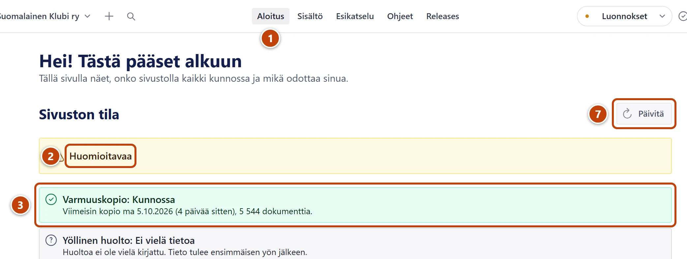
Avaa Studio. Aloitus aukeaa ensimmäisenä. Muualta pääset sinne yläpalkin painikkeesta Aloitus. ①
Katso kohdan Sivuston tila yhteenveto: Kaikki kunnossa, Huomioitavaa tai Vaatii toimia. ②
Lue rivit. Rivin nimen perässä tila lukee sanana, esim. Kunnossa, Huomio, Vaatii toimia tai Ei vielä tietoa. ③
Jos rivi on keltainen tai punainen, lue sen alla oleva ohje. Kerro tukihenkilölle rivin otsikko ja teksti.
Sisältösi on silti tallessa. Voit jatkaa työtä normaalisti.
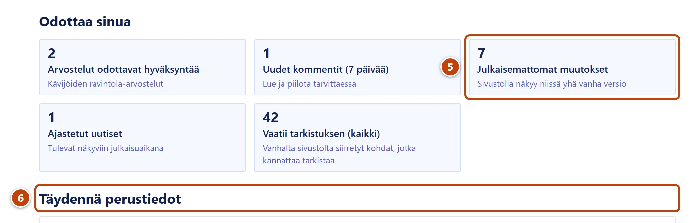
Kohdassa Odottaa sinua paina korttia, jossa on luku. ⑤
Oikea lista aukeaa. Teksti Ei odottavia tarkoittaa, ettei siinä ole tehtävää.
Jos näet kohdan Täydennä perustiedot, paina riviä. ⑥
Oikea kohta aukeaa valikosta. Jos lomake ei aukea itse, valitse listasta ylin kohta, esim. Osoite, sähköposti ja some.
Kun haluat tuoreet tiedot kesken työn, paina Päivitä. ⑦
Rivit ja niiden merkitys:
Rivi
Mitä se kertoo
Kun se ei ole vihreä
Varmuuskopio
Viikoittainen varmuuskopio, joka tehdään maanantaiyönä
Kerro tukihenkilölle. Keltainen: kopio on tallessa, palautus toimii.
Yöllinen huolto
Ravintoloiden arvosanat ja vanhojen tiedostojen siivous joka yö
Kerro tukihenkilölle, jos sama toistuu useana päivänä.
Otteluohjelman haku
Veikkausliigan ottelut haetaan automaattisesti
Punainen: lisää tärkeät ottelut käsin ja kerro tukihenkilölle. Keltainen talvella on normaalia.
Dokumenttikiintiö (arvio)
Arvio siitä, paljonko sisältöä sivustolle mahtuu vielä
Keltainen: kerro tukihenkilölle. Tila Arvio on normaali.
Julkaisemattomat muutokset
Sisältö, jossa on muutos, jota et ole julkaissut
Paina Avaa julkaisemattomat muutokset. Julkaise tai hylkää muutos.
Tulos
Tiedät, onko sivustolla kaikki kunnossa.
Näet, montako arvostelua, kommenttia ja muuta asiaa odottaa sinua.
Lisävalinnat
Samat listat ovat aina valikon kohdassa Tehtävät sinulle.
Aina kun muokkaat jotain. Muutos tallentuu itsestään luonnokseksi, ja sivustolle se menee vasta, kun painat Julkaise. Tästä kortista näet myös, miten perut virheen.
Askeleet
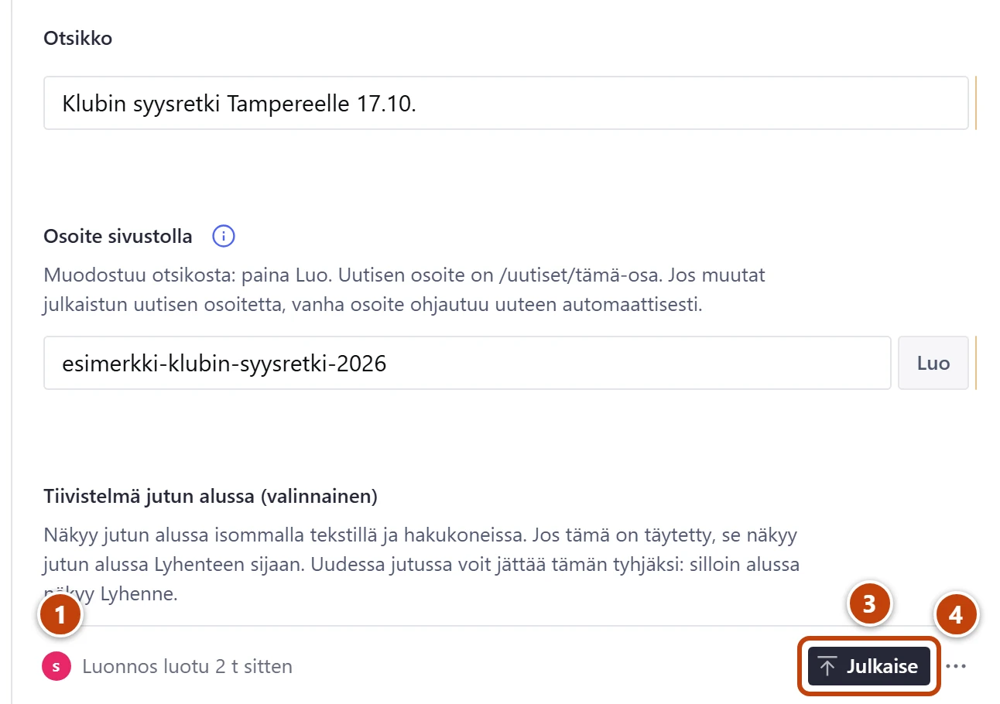
Tallenna ja julkaise
Kirjoita tai muuta kenttää. Muutos tallentuu itsestään. ①
Alapalkissa vasemmalla lukee hetken Tallennettu, sitten esim. "Muokattu juuri nyt". Tallennuspainiketta ei ole.
Tee kaikki muutokset rauhassa. Voit välillä sulkea selaimen: luonnos säilyy.
Kun kaikki on valmista, paina oikeassa alakulmassa Julkaise. ③
Ruudulle tulee ilmoitus Dokumentti on julkaistu, ja painike muuttuu harmaaksi. Sivusto päivittyy noin minuutissa.
Vinkki
Julkaise vasta lopuksi, kerran. Esimerkiksi ottelun jälkeen päivitä kaikki taulukon solut ja paina Julkaise vasta sitten.
Peru muutos, jota et ole julkaissut
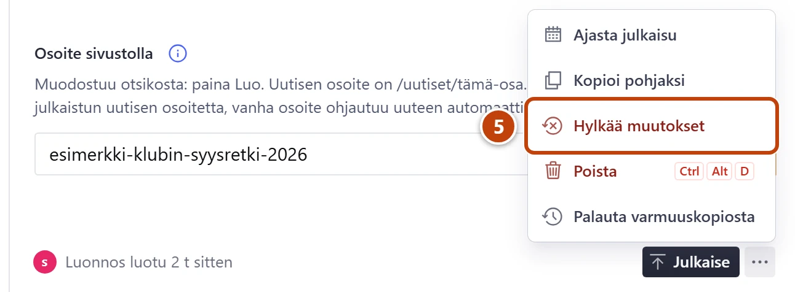
Oikeassa alakulmassa paina Julkaise-painikkeen vieressä olevaa kolmen pisteen painiketta (⋯). ④
Toimintovalikko aukeaa. Painikkeen nimi on Asiakirjatoiminnot.
Valitse Hylkää muutokset. ⑤ Ikkunassa Hylätäänkö muutokset? paina Hylkää muutokset.
Lomake palaa samaksi kuin sivustolla nyt.
Palauta aiempi versio historiasta
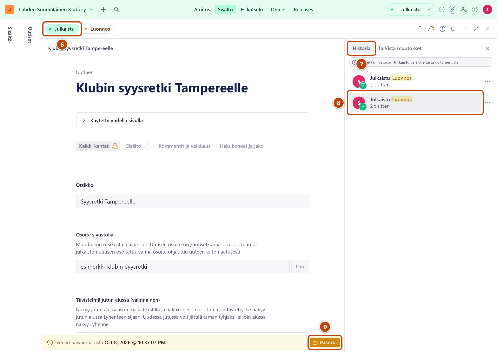
Lomakkeen yläreunassa vasemmalla paina Julkaistu. ⑥
Yläpalkki muuttuu vihreäksi. Lomake näyttää sivustolla olevan version.
Alareunassa vasemmalla paina aikatekstiä, esim. "Viimeksi julkaistu 2 pv sitten". Valitse oikealle aukeavasta paneelista välilehti Historia. ⑦
Valitse listasta aiempi Julkaistu-rivi, jolloin kaikki oli vielä kunnossa. ⑧
Lomake näyttää sen version.
Paina alhaalla oikealla Palauta ja sitten Vahvista. ⑨
Vanha versio tulee luonnokseksi. Sivusto ei vielä muutu.
Paina lomakkeen yläreunasta Luonnos. Tarkista lomake ja paina Julkaise.
Hyvä tietää
Kun yläpalkki on vihreä, Julkaise-painikkeen paikalla on punainen Poista julkaisu. Älä paina sitä: se vie sisällön pois sivustolta. Palaa painamalla Luonnos.
Tulos
Julkaisun jälkeen Julkaise on harmaa, ja alapalkissa lukee "Viimeksi julkaistu juuri nyt". Muutos näkyy sivustolla noin minuutin kuluessa.
Hylkäyksen tai palautuksen jälkeen lomake näyttää vanhan sisällön.
Lisävalinnat
Kirjoitusvirheen perut heti näppäimillä Ctrl + Z (Macissa Cmd + Z).
Taulukosta poistetun rivin saat takaisin ilmoituksen painikkeesta Kumoa.
Kun haluat nähdä, miltä muutos näyttää sivulla, ennen kuin julkaiset sen. Samalla näet, millä sivulla sisältö näkyy.
Askeleet
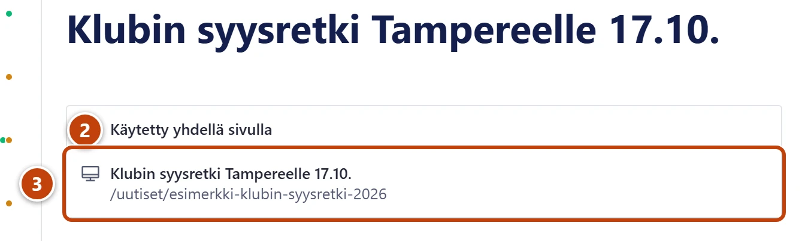
Avaa muokattava sisältö, esim. uutinen.
Lomakkeen yläreunassa, otsikon alla, paina kohtaa Käytetty yhdellä sivulla. ②
Kohta aukeaa, ja sen alla näkyy sivun nimi ja osoite. Monella sivulla näkyvästä lukee esim. "Käytetty 2 sivulla".
Paina sivun nimeä. ③ Sivu aukeaa työkaluun Esikatselu.
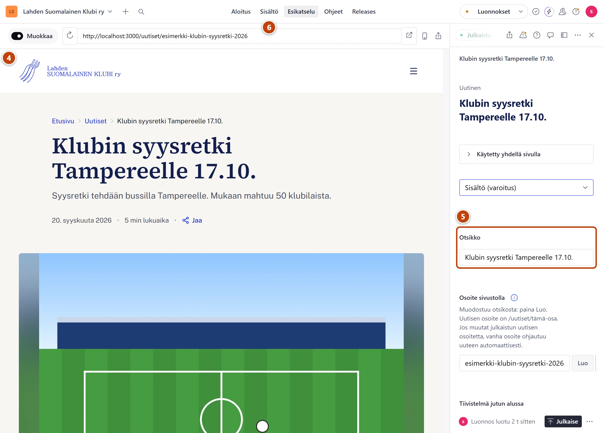
Katso sivua. Siinä näkyvät myös julkaisemattomat muutokset. ④
Muokkaa tarvittaessa lomakkeella. ⑤ Sivu päivittyy samalla.
Kun sivu näyttää hyvältä, paina lomakkeen oikeasta alakulmasta Julkaise. Palaa muokkaukseen yläpalkin painikkeesta Sisältö. ⑥
Tulos
Näit sivun sellaisena kuin se näkyy julkaisun jälkeen.
Kävijät eivät näe luonnosta ennen kuin painat Julkaise.
Lisävalinnat
Esikatselun voi avata myös suoraan yläpalkista: Esikatselu → selaa oikealle sivulle → valitse sisältö listasta Tämän sivun dokumentit.
Hyväksymätön ravintola-arvostelu ei näy esikatselussakaan. Se näkyy vain hyväksyntälistassa.
Jos jokin menee vikaan
Kohdassa lukee Ei käytetty millään sivulla: sisältö ei vielä näy missään. Taulukon kohdalla lue sen alla oleva ohje.
Kohdassa lukee Ratkaistaan sijainteja... pitkään: odota hetki tai avaa sisältö uudelleen.
Sivuston tai Studion yläreunassa on palkki "Esikatselutila: näet myös julkaisemattomat luonnokset". Se jää näkyviin esikatselun jälkeen. Paina palkista "Poistu esikatselusta". Katso Sivuston yläreunassa lukee Esikatselutila.
Kun lisäät kuvan uutiseen, sivulle tai muuhun sisältöön, tai vaihdat vanhan kuvan. Kuva näkyy sivulla ja usein myös silloin, kun linkki jaetaan.
Ennen kuin aloitat
Kuva on tietokoneella tai puhelimessa. Puhelimen kuvan voi ladata sellaisenaan, sivusto pienentää sen itse.
Askeleet
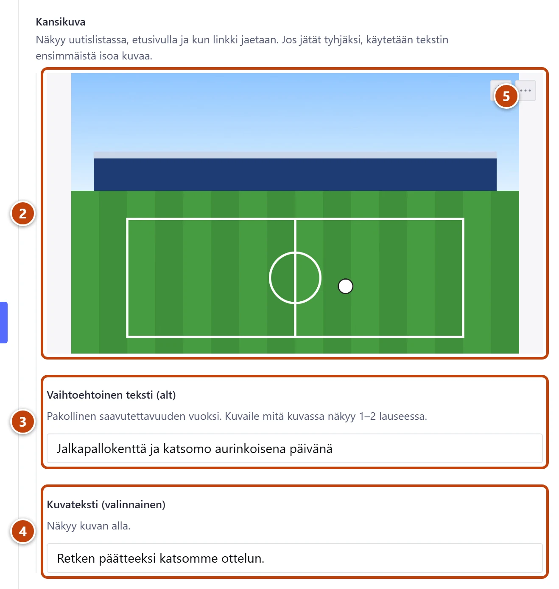
Avaa sisältö ja etsi kuvakenttä, esim. Kansikuva.
Tekstin sekaan: napsauta tekstiin kohtaan ja paina työkalupalkista Kuva.
Raahaa kuva kenttään, tai paina Lataa ja valitse kuva. ②
Kirjoita Vaihtoehtoinen teksti (alt): mitä kuvassa näkyy, 1–2 lausetta. ③
Esim. "Klubilaiset Lahden torilla vappuna". Ruudunlukija lukee tämän näkövammaiselle.
Halutessasi kirjoita Kuvateksti (valinnainen). ④ Se näkyy kuvan alla.
Kuvan oikeassa yläkulmassa on kaksi pientä painiketta. Paina vasemmanpuoleista, Rajaa kuva. ⑤
Ikkuna Muokkaa hotspotia ja rajaa aukeaa.
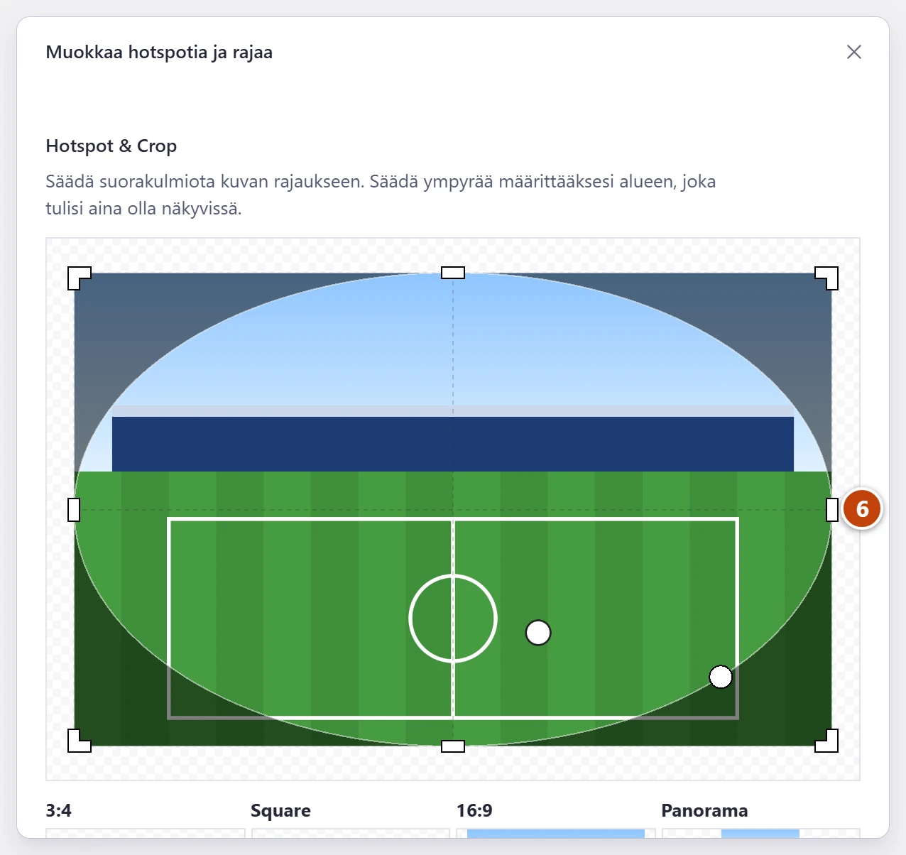
Vedä ympyrä kuvan tärkeimmän kohdan päälle, esim. kasvojen. ⑥
Kehyksen kulmista voit lisäksi rajata reunoja pois. Sulje ikkuna oikean yläkulman rastista (×).
Lopuksi paina Julkaise.
Tulos
Kuva näkyy lomakkeella, ja Vaihtoehtoinen teksti (alt) on täytetty.
Sivulla kuvan tärkein kohta pysyy näkyvissä, vaikka kuva rajataan eri kokoon.
Lisävalinnat
Vaihda kuva: paina kuvan oikean yläkulman kolmea pistettä. Valitse ylin Lataa ja uusi kuva koneelta. Tarkista kuvaus.
Käytä aiemmin ladattua kuvaa: paina kentässä Valitse (tai kuvan kolmen pisteen valikosta Valitse). Kuvat ovat uusimmasta vanhimpaan, ja lisää saat painikkeesta Lataa lisää. Kirjoita kuvaus tähän käyttöön sopivaksi.
Poista kuva: kuvan kolmen pisteen valikosta Tyhjennä kenttä.
Useita kuvia kerralla tekstiin: valitse työkalupalkista Kuvasarja (useita kuvia). Raahaa kuvat kenttään Kuvat ja kirjoita Mitä kuvissa on (yhteinen kuvaus). Kohdassa Kuvien muoto voit valita, rajataanko kuvat neliöiksi.
Kentän Vaihtoehtoinen teksti (alt) nimen vieressä on punainen huutomerkki. Vie hiiri sen päälle: "Alt-teksti on pakollinen (3–200 merkkiä)." Kirjoita kuvaus kenttään.
Uutisessa keltainen "Uutisessa ei ole kansikuvaa eikä isoa kuvaa tekstissä": uutisen voi julkaista silti. Listassa näkyy silloin pelkkä teksti.
Sivulla kuvasta leikkautuu tärkeä kohta pois: siirrä ympyrää rajausikkunassa ja julkaise uudelleen.
Kun haluat, että sana tekstissä vie toiselle sivulle, toiselle sivustolle, sähköpostiin tai tiedostoon. Sama valinta Mihin linkki vie? on myös valikossa, etusivun pikalinkeissä, painikkeissa ja klubin toiminnan vuosilinkeissä.
Askeleet
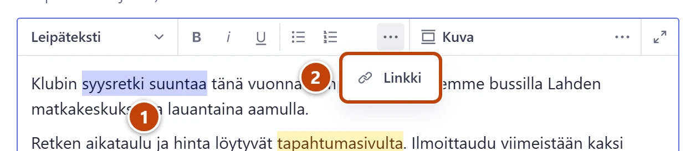
Maalaa tekstistä sana tai lause, josta linkki tehdään. ①
Paina työkalupalkista Linkki (ketjun kuva). ②
Jos sitä ei näy, paina ensin luettelopainikkeiden oikealla puolella olevaa kolmea pistettä (Näytä lisää). Ikkuna Muokkaa Linkki aukeaa.
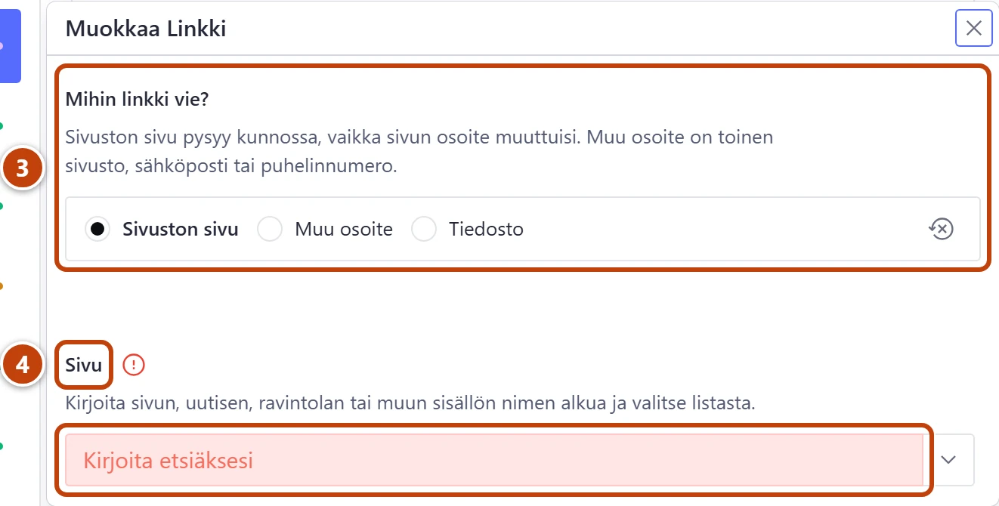
Kohdassa Mihin linkki vie? valitse Sivuston sivu, Muu osoite tai Tiedosto. ③
Sivuston sivu on valmiiksi valittuna.
Sivuston sivu: kirjoita kenttään Sivu sivun, uutisen tai ravintolan nimen alkua. Valitse listasta. ④
Tämä linkki pysyy kunnossa, vaikka sivun osoite muuttuisi.
Tiedosto: raahaa PDF-, Word- tai Excel-tiedosto kenttään Tiedosto.
Muulle osoitteelle ja tiedostolle voit kytkeä päälle Avaa uuteen välilehteen.
Sulje ikkuna oikean yläkulman rastista (×). Lopuksi paina Julkaise.
Varoitus
Tiedosto on julkinen. Se löytyy sivustolta, vaikka poistaisit linkin, ja myös tiedoston nimi näkyy. Älä liitä jäsenluetteloita tai muuta luottamuksellista.
Tulos
Sana näkyy tekstissä linkkinä.
Julkaisun jälkeen linkki toimii sivustolla. Tiedoston perässä näkyy tyyppi ja koko, esim. "(PDF, 240 kt)".
Valitse klubin omalle sivulle aina Sivuston sivu. Valitse Muu osoite vain, jos sivua ei löydy listasta.
Jos jokin menee vikaan
Kentän nimen vieressä on keltainen kolmio tai punainen huutomerkki. Vie hiiri sen päälle, niin näet tekstin:
Keltainen "… ei ole vielä julkaistu": valitsemasi sivu on luonnos. Linkki näkyy sivustolla vasta, kun julkaiset sen sivun.
Keltainen "Tätä valintaa ei käytetä…": vaihdoit linkin muualle. Tyhjennä vanha sivuvalinta: paina valitun sivun rivin kolmea pistettä ja valitse Tyhjennä. Tiedostolle valinta on Tyhjennä kenttä.
Kun haluat tekstiin YouTube- tai Vimeo-videon, kartan kokoontumispaikkaan tai Google Forms -ilmoittautumislomakkeen. Sivulla näkyy ensin painike, ja video tai kartta latautuu vasta, kun lukija painaa sitä.
Ennen kuin aloitat
YouTube-video toimii kaikissa tekstikentissä.
Kartta, lomake ja Vimeo toimivat sivuilla, uutisissa, tapahtumissa ja klubin toiminnassa.
Askeleet
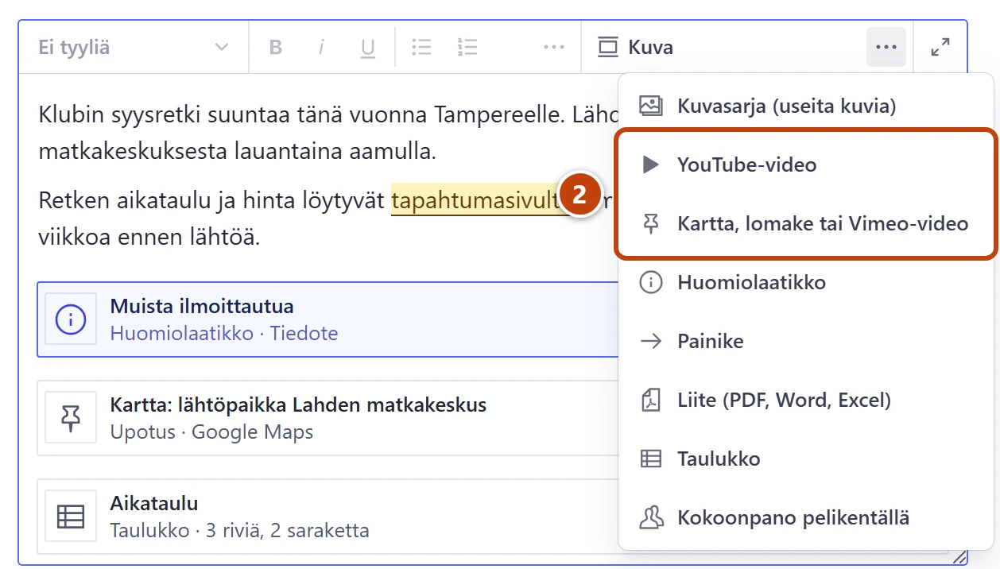
Napsauta tekstiin kohtaan, johon video tai kartta tulee.
Työkalupalkissa paina Kuva-painikkeen oikealla puolella olevaa kolmea pistettä (Näytä lisää).
Valitse YouTube-video tai Kartta, lomake tai Vimeo-video. ② Ikkuna aukeaa.
Huomiolaatikko: lyhyt ilmoitus, joka erottuu tekstistä, esim. jäsenmaksun eräpäivä.
Painike: selvä toiminto, esim. "Ilmoittaudu" tai "Lue säännöt".
Liite: tiedosto luettavaksi, esim. kokouskutsu tai säännöt.
Nämä toimivat sivuilla, uutisissa, tapahtumissa ja klubin toiminnassa.
Askeleet
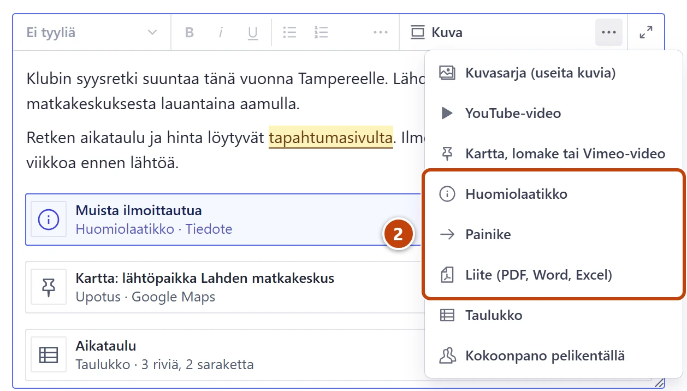
Napsauta tekstiin kohtaan, johon lisäys tulee.
Työkalupalkissa paina Kuva-painikkeen oikealla puolella olevaa kolmea pistettä (Näytä lisää).
Valitse Huomiolaatikko, Painike tai Liite (PDF, Word, Excel). ② Ikkuna aukeaa.
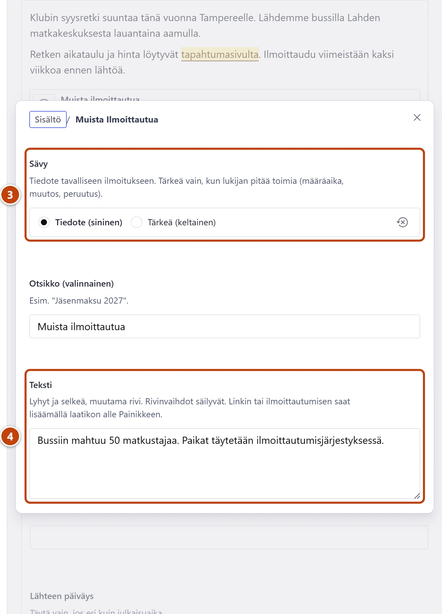
Huomiolaatikko: valitse Sävy. ③
Tiedote (sininen) tavalliseen ilmoitukseen, Tärkeä (keltainen) vain, kun lukijan pitää toimia.
Kirjoita Teksti ja halutessasi Otsikko (valinnainen). ④ Muutama rivi riittää.
Painike: kirjoita Painikkeen teksti, esim. "Ilmoittaudu".
Kohdassa Mihin painike vie valitse kohde samalla tavalla kuin linkissä.
Liite: kirjoita Linkin teksti, esim. "Vuosikokouskutsu 2027".
Raahaa PDF-, Word- tai Excel-tiedosto kenttään Tiedosto.
Sulje ikkuna oikean yläkulman rastista (×). Lopuksi paina Julkaise.
Varoitus
Liitetty tiedosto on julkinen. Se löytyy sivustolta, vaikka poistaisit liitteen, ja myös tiedoston nimi näkyy. Älä liitä jäsenluetteloita, henkilötietoja sisältäviä pöytäkirjoja tai muuta luottamuksellista.
Tulos
Huomiolaatikko näkyy sivulla värillisenä laatikkona.
Painike näkyy sinisenä nappina.
Liite näkyy linkkinä, jonka perässä on tyyppi ja koko, esim. "Klubin säännöt (PDF, 240 kt)".
Wordista saat PDF:n valitsemalla Wordissa "Tallenna nimellä" ja muodoksi PDF.
Väärä tiedosto julkaistu: poista liite tekstistä ja julkaise. Käyttämätön tiedosto poistuu itsestään viikon kuluttua. Kiireellinen poisto: Poista henkilön tiedot pyynnöstä
Vinkki
Käytä keltaista Tärkeä (keltainen) säästeliäästi. Jos kaikki on tärkeää, mikään ei erotu.
Jos jokin menee vikaan
Painike ei näy sivulla: valittu sivu on julkaisematta tai osoite on virheellinen. Tarkista kohta Mihin painike vie.
Tiedosto ei kelpaa: vain PDF, Word (.docx) ja Excel (.xlsx) käyvät. Tallenna tiedosto ensin johonkin näistä muodoista.
Keltainen "Tiedosto on iso…": pienennä PDF. Liitteen voi silti julkaista.
Kun juttuun tarvitaan pieni taulukko, joka kuuluu vain tähän juttuun. Esimerkiksi mölkkyturnauksen tulokset.
Ennen kuin aloitat
Tilasto, joka näkyy monella sivulla tai jota päivitetään vuosia, tehdään jalkapalloarkistoon. Katso Päivitä tilastotaulukko.
Askeleet
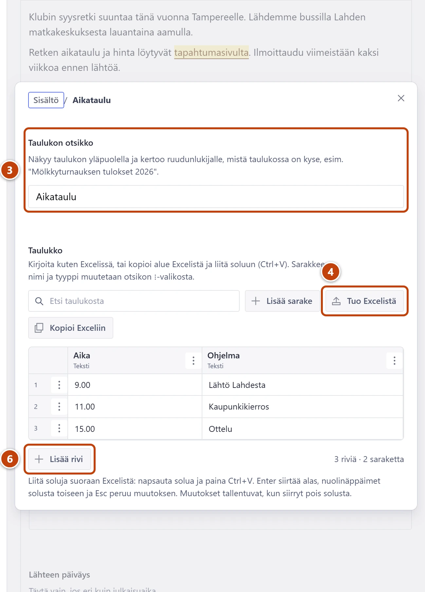
Napsauta tekstiin kohtaan, johon taulukko tulee.
Työkalupalkissa paina Kuva-painikkeen oikealla puolella olevaa kolmea pistettä (Näytä lisää). Valitse Taulukko. Taulukon ikkuna aukeaa.
Kirjoita Taulukon otsikko, esim. "Mölkkyturnauksen tulokset 2026". ③
Jos tiedot ovat Excelissä, paina Tuo Excelistä. ④
Kopioi solut Excelissä ja liitä ne kohtaan Liitä solut tähän. Paina sinistä painiketta, jossa lukee "Korvaa taulukko".
Muuten paina Lisää sarake, anna Sarakkeen nimi ja paina Tallenna. Toista jokaiselle sarakkeelle.
Lisää rivejä painikkeella Lisää rivi ja kirjoita soluihin. ⑥
Enter siirtää alas, nuolinäppäimet solusta toiseen.
Sulje ikkuna oikean yläkulman rastista (×). Lopuksi paina Julkaise.
Tulos
Tekstissä näkyy laatikko, jossa on taulukon otsikko sekä rivien ja sarakkeiden määrä.
Sivulla taulukko näkyy otsikkoineen tekstin keskellä.
Lisävalinnat
Rivin lisäys väliin, siirto tai poisto: rivinumeron vieressä olevasta valikosta.
Sarakkeen nimen muutos: sarakkeen otsikon valikosta Muokkaa nimeä ja tyyppiä.
Koko taulukko Exceliin muokattavaksi: Kopioi Exceliin. Tuo takaisin valinnalla Korvaa koko taulukko (sarakkeet ja rivit).
Kun kirjoitat pidemmän tekstin ja haluat siihen väliotsikoita, lihavointeja tai luettelon. Työkalupalkki on tekstikentän yläreunassa.
Askeleet
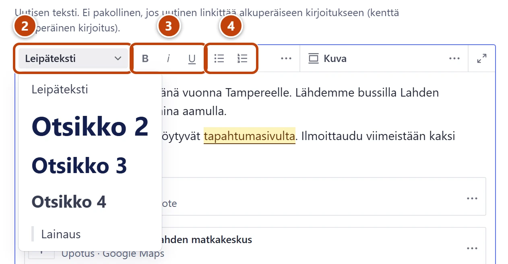
Napsauta tekstikenttään, esim. uutisen Sisältö.
Väliotsikko: napsauta riville ja avaa työkalupalkin vasemman reunan tyylivalikko, jossa lukee Leipäteksti. Valitse Otsikko 2. ②
Jos valikossa lukee Ei tyyliä, napsauta ensin tekstiriville.
Pienempi väliotsikko on Otsikko 3. Lainaukselle valitse Lainaus.
Korostus: maalaa sana ja paina Lihava (B), Kursiivi (I) tai Alleviivattu (U). ③
Luettelo: napsauta riville ja paina Luettelo tai Numeroitu. ④
Rivinvaihto saman kappaleen sisällä: paina Shift + Enter. Enter aloittaa uuden kappaleen.
Lopuksi paina Julkaise.
Tulos
Väliotsikot, korostukset ja luettelot näkyvät lomakkeella ja sivulla.
Lyhyt ensimmäinen kappale näkyy sivulla isommalla johdantona.
Lisävalinnat
Tekstiä voi liittää Wordista tai sähköpostista (Ctrl + V). Tarkista sen jälkeen väliotsikot ja luettelot.
Kun haluat kertoa klubin asioista: tapahtumasta, matkasta, ottelusta tai tiedotteesta. Uutinen näkyy etusivulla ja uutislistassa. Uudet jutut kirjoitetaan tänne, ei enää vanhaan blogiin.
Kun uutinen pitää saada näkyviin myöhemmin, esim. vuosikokouskutsu maanantaina kello 8. Kirjoitat ja julkaiset nyt, ja uutinen tulee sivustolle itsestään valittuna aikana.
Kentän Julkaisuaika oikeassa reunassa paina kalenterin kuvaa. Valitse päivä ja kirjoita kellonaika, jolloin uutinen tulee näkyviin. ②
Alapalkkiin tulee heti merkki Ajastettu.
Paina Julkaise. ③ Ajastus alkaa vasta tästä.
Uutinen odottaa piilossa. Kävijät eivät näe sitä ennen valittua aikaa.
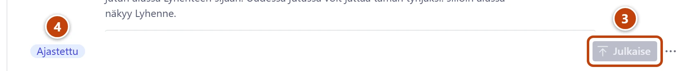
Tarkista, että alapalkissa on merkki Ajastettu. ④
Uutislistassa uutisen kohdalla lukee "Ajastettu" ja aika.
Tulos
Uutinen tulee sivustolle noin minuutin kuluessa valitusta ajasta.
Siihen asti se on listassa Tehtävät sinulle → Ajastetut uutiset.
Lisävalinnat
Julkaise heti: valitse kalenterista Aseta nykyiseen aikaan ja paina Julkaise.
Siirrä aikaa: muuta Julkaisuaika ja paina Julkaise uudelleen.
Varoitus
Älä käytä toimintovalikon Sanityn omaa toimintoa Ajasta julkaisu. Klubin ajastus tehdään aina kentällä Julkaisuaika.
Jos jokin menee vikaan
Merkin selitys sanoo "…, kun painat Julkaise.": muutit aikaa, mutta et julkaissut. Paina Julkaise.
Linkissä toiseen sivuun näkyy keltainen "Uutinen tulee näkyviin …": linkki ajastettuun uutiseen näkyy sivustolla vasta sen julkaisuaikana. Tämä on normaalia.
Kun kirjoitat toistuvan uutisen: vuosikokouskutsun, palloveikkauksen tilanteen tai uuden palloveikkauskauden. Pohjassa ovat valmiina otsikko, teksti, kategoriat ja tunnisteet.
Askeleet
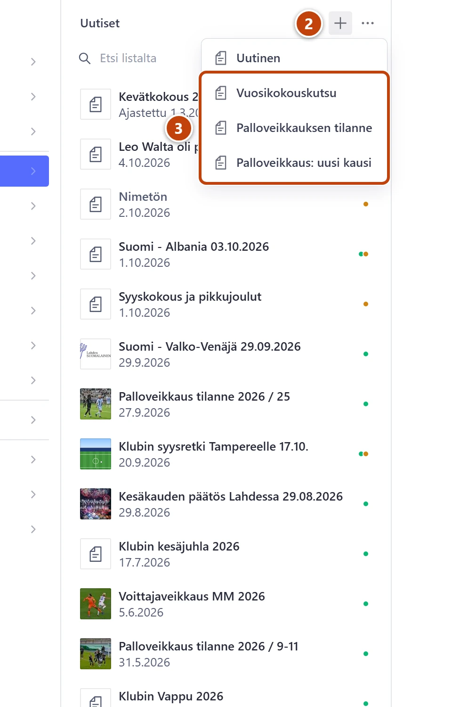
Vasemmasta valikosta valitse Uutiset.
Listan yläreunassa paina plus-painiketta (+). ② Pohjien valikko aukeaa.
Valitse Vuosikokouskutsu, Palloveikkauksen tilanne tai Palloveikkaus: uusi kausi. ③
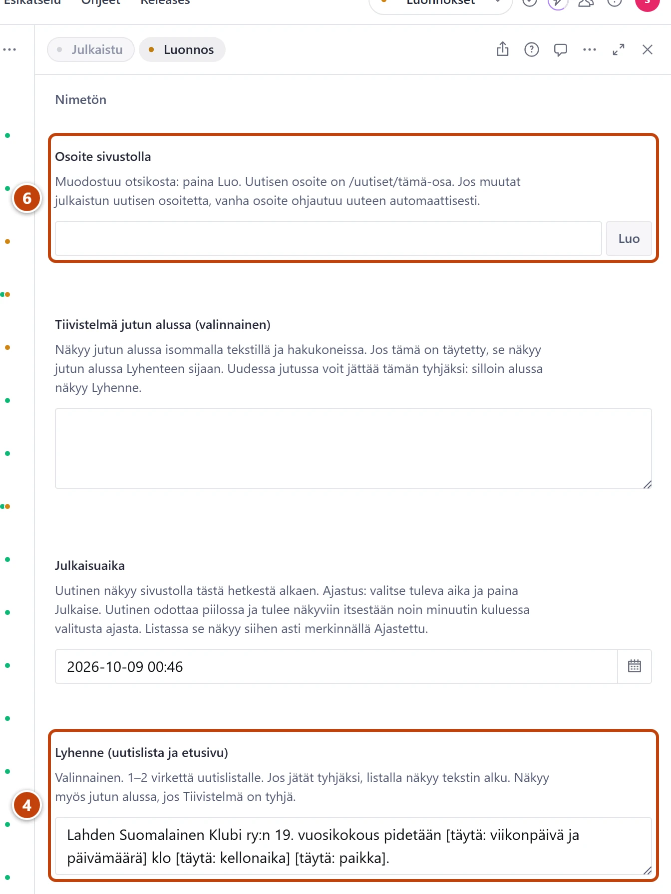
Etsi hakasulkeet, esim. [täytä: kellonaika]. ④
Niitä on esim. kentissä Lyhenne (uutislista ja etusivu) ja Sisältö, joissakin pohjissa myös Otsikko.
Kirjoita tilalle oikea tieto ja poista hakasulkeet. Esim. [täytä: kellonaika] → 18.00.
Kun otsikko on valmis, paina kentän Osoite sivustolla vieressä Luo. ⑥
Uusi kausi: avaa välilehti Kommentit ja veikkaus. Täytä Joukkueet ja Veikkaus sulkeutuu.
Tarkista Kategoriat ja Tunnisteet. Ne ovat valmiina.
Lopuksi paina Julkaise.
Tulos
Uutinen näkyy sivustolla kuten tavallinen uutinen.
Uudessa kaudessa jäsenet voivat veikata uutisen alla.
Lisävalinnat
Pohjat löytyvät myös yläpalkin vasemmasta reunasta plus-painikkeesta (Luo uusi asiakirja). Kirjoita hakuun esim. "vuosi".
Viime vuoden uutinen pohjaksi: avaa uutinen, toimintovalikosta valitse Kopioi pohjaksi. Kopio aukeaa samalla otsikolla. Anna uusi otsikko, paina Luo ja valitse Julkaisuaika (kalenterin Aseta nykyiseen aikaan). Veikkauksessa valitse myös Veikkaus sulkeutuu.
Sarjataulukko riveinä samassa kappaleessa: Shift + Enter vaihtaa rivin.
Jos jokin menee vikaan
Punainen "Täytä vielä hakasulkeissa olevat kohdat: …": tekstiin jäi hakasulkeet. Virhe kertoo, mitkä. Täytä ne ja paina Julkaise.
Kategoria puuttuu pohjasta: kategoria on nimetty uudelleen tai poistettu. Rastita oikea käsin.
Valitsit väärän pohjan: valitse toimintovalikosta Hylkää muutokset ja vahvista. Luonnos poistuu. Aloita alusta. Tavallisen uutisen saat pohjasta Uutinen.
Jokaisessa uutisessa. Kategoria ja tunniste ovat eri asioita:
Kategoria
Tunniste
Mikä
Laaja aihe, esim. Tapahtumat tai Palloveikkaus
Tarkka aihe: joukkue, paikka tai henkilö, esim. Huuhkajat
Montako
1–2 uutista kohden
Niin monta kuin sopii, enintään 30
Missä näkyy
Uutislistan suodattimessa
Jokaisella tunnisteella on oma sivu, jolla on kaikki sen uutiset
Uusi
Valikon kohdassa Uutiskategoriat
Kirjoitetaan suoraan kenttään
Askeleet
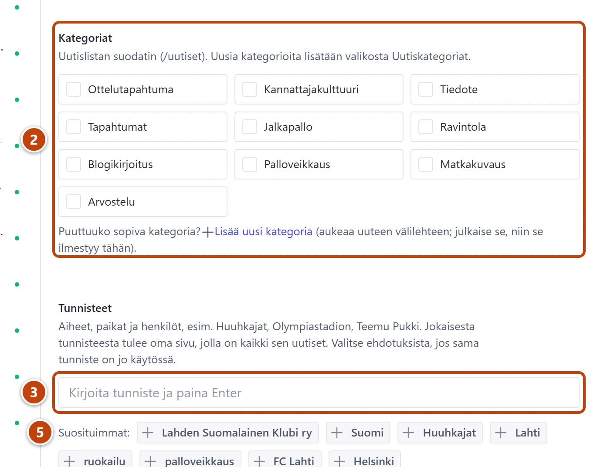
Avaa uutinen.
Kohdassa Kategoriat rastita yksi tai kaksi sopivaa aihetta. ②
Kirjoita kenttään Tunnisteet pari ensimmäistä kirjainta. ③
Jos sopiva tunniste on listassa, valitse se. Muuten kirjoita uusi ja paina Enter.
Listassa näkyy, montako uutista tunnisteella jo on.
Yleisimmän tunnisteen saat myös rivin Suosituimmat: painikkeista. ⑤
Turhan tunnisteen poistat sen vieressä olevasta rastista (×).
Lopuksi paina Julkaise.
Tulos
Uutinen löytyy uutislistalta kategorian suodattimella.
Jokaisen tunnisteen sivulla näkyy tämä uutinen muiden samanaiheisten kanssa.
Lisävalinnat
Uusi kategoria: valikosta Uutiskategoriat → listan yläreunan plus-painike → Nimi → kentän Osoite suodattimessa vieressä Luo → Julkaise. Kohdassa Järjestys suodattimessa pienin numero tulee ensin.
Uuden kategorian voi tehdä myös uutisesta linkillä Lisää uusi kategoria. Se aukeaa uuteen välilehteen.
Kategorian nimen voi vaihtaa milloin tahansa. Uusi nimi näkyy kaikissa uutisissa.
Kategorian kohtaan Kuvaus hakukoneille (valinnainen) voit kirjoittaa lyhyen kuvauksen Googlen hakutuloksiin.
Vanhan blogin kirjoituksissa välilehdellä Hakukoneet ja jako on kohta Alkuperäinen Blogspot-kirjoitus. Se on vain muisto, eikä sitä muokata.
Vinkki
Päätä kategoria kerran ja pidä se. Jos et ole varma, valitse yksi laaja kategoria ja lisää tarkemmat aiheet tunnisteiksi.
Jos jokin menee vikaan
Tunnisteesta tuli eri muoto kuin kirjoitit, esim. "huuhkajat" → "Huuhkajat": Studio käyttää jo vakiintunutta muotoa. Tämä on oikein.
Punainen "Samanniminen kategoria on jo olemassa.": käytä olemassa olevaa kategoriaa.
Kategoriaa ei voi poistaa: jokin uutinen käyttää sitä. Poista rasti niistä uutisista ensin.
Kun jäsenet saavat veikata tai kommentoida uutisen alla, esim. palloveikkaus, EM-kisojen voittajaveikkaus tai "Suomen paras avaus". Viesti näkyy sivulla heti, ja asiattomat piilotetaan jälkikäteen.
Kun jaat sivuston linkin WhatsAppissa tai Facebookissa. Linkin esikatselussa näkyy kuva, otsikko ja osoite. Kuva valitaan automaattisesti, mutta oma kuva näyttää parhaalta.
Ennen kuin aloitat
Hyvä jakokuva on vaakakuva, vähintään noin 1200 pikseliä leveä.
Kuvaan ei tarvitse lisätä tekstiä tai logoa. Otsikko näkyy kuvan vieressä.
Askeleet
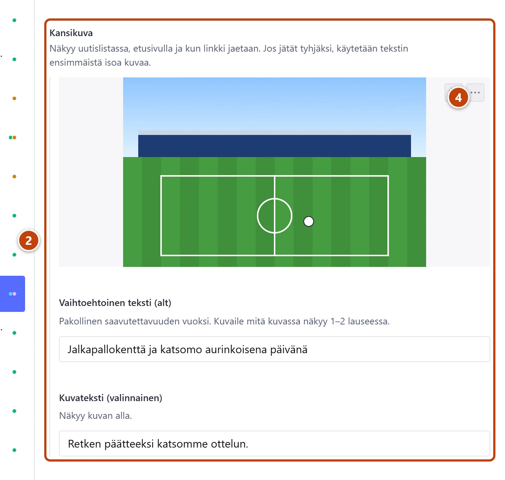
Avaa uutinen, tapahtuma tai sivu.
Lisää kuva sisällön omaan kuvakenttään. ②
Uutisessa ja tapahtumassa se on Kansikuva, sivulla Iso kuva sivun yläosassa.
Kirjoita Vaihtoehtoinen teksti (alt).
Paina Rajaa kuva ja vedä ympyrä kuvan tärkeimmän kohdan päälle. ④
Jako rajaa kuvan tämän kohdan ympäriltä.
Paina Julkaise.
Jaa linkki vasta julkaisun jälkeen.
Tulos
Jaetun linkin esikatselussa näkyy valitsemasi kuva.
Jos omaa kuvaa ei ole, jakoon otetaan ensin tekstin ensimmäinen riittävän iso kuva. Sen jälkeen YouTube-videon kuva ja lopuksi klubin logo.
Hyvin pieniä kuvia ei käytetä, koska ne näyttäisivät suttuisilta.
Jos jokin menee vikaan
Jaossa näkyy klubin logo: sisällössä ei ole riittävän isoa kuvaa. Lisää isompi kuva ja julkaise.
Jaossa näkyy vanha kuva: WhatsApp ja Facebook muistavat kerran jaetun linkin kuvan. Uusi kuva näkyy vasta jonkin ajan kuluttua.
Kuvasta leikkautuu tärkeä kohta: siirrä ympyrää rajausikkunassa ja julkaise uudelleen.
Ottelun jälkeen päivität taulukoita: Huuhkaja-arvostelua, pelaajatilastoja, Kansojen liigaa tai muuta tilastoa.
Muutos näkyy sivustolla taulukon omalla sivulla, kun julkaiset sen.
Ennen kuin aloitat
Kokoa illan muutokset ensin yhteen, esimerkiksi paperille tai Exceliin.
Kirjoittamasi tallentuu itsestään luonnokseksi. Kävijät eivät näe luonnosta.
Tee kaikki taulukon muutokset ensin. Paina Julkaise vain kerran, aivan lopuksi.
Vinkki
Jokainen taulukko julkaistaan erikseen. Jos päivität kolme taulukkoa, painat Julkaise kolme
kertaa: kerran kunkin taulukon lopuksi.
Askeleet
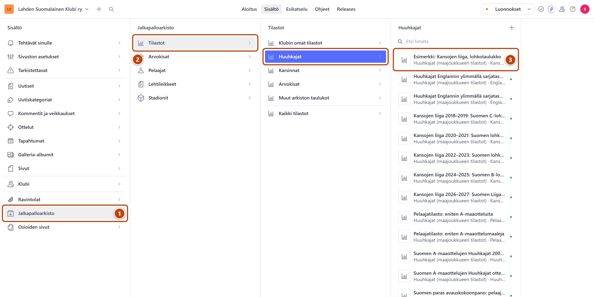
Vasemmasta valikosta valitse Jalkapalloarkisto. ①
Valitse Tilastot ja sitten ryhmä, esimerkiksi Huuhkajat. ②
Valitse listasta taulukko, jota päivität. ③
Taulukko avautuu oikealle.
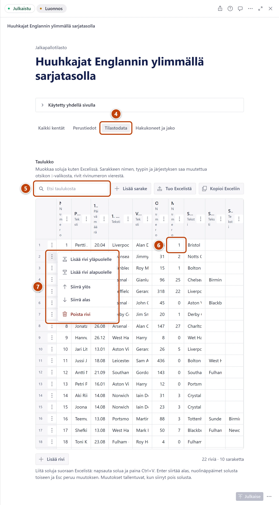
Otsikon alla valitse välilehti Tilastodata. ④
Kirjoita kenttään Etsi taulukosta pelaajan tai ottelun nimi. ⑤
Näkyviin jäävät vain ne rivit, joilla nimi on.
Napsauta solua ja kirjoita uusi arvo. Paina lopuksi Enter. ⑥
Napsautus valitsee vanhan arvon, joten uusi korvaa sen. Arvo tallentuu, kun poistut
solusta. Enter vie alempaan soluun.
Hyvä tietää
Kirjoita luvut samalla tavalla joka taulukossa:
prosentti: luku, välilyönti ja prosenttimerkki, esimerkiksi 13 % tai 40 %
desimaali pilkulla: 2,5
iso luku välilyönnillä: 61 035
päivämäärä: 26.9.2026.
Numerosarakkeessa prosentti ja desimaali saavat solun alle aaltoviivan. Se on normaalia.
Arvo tallentuu sellaisenaan.
Tarkista lopuksi järjestys ja sijat. Siirrä riviä rivinumeron vieressä olevasta valikosta ⋮:
Siirrä ylös tai Siirrä alas. ⑦
Tyhjennä ensin hakukenttä. Haun aikana rivejä ei voi siirtää.
Korjaa sitten sijanumerot ylhäältä alas.
Saman pistemäärän kohdalla toimi kuten taulukossa on ennenkin tehty.
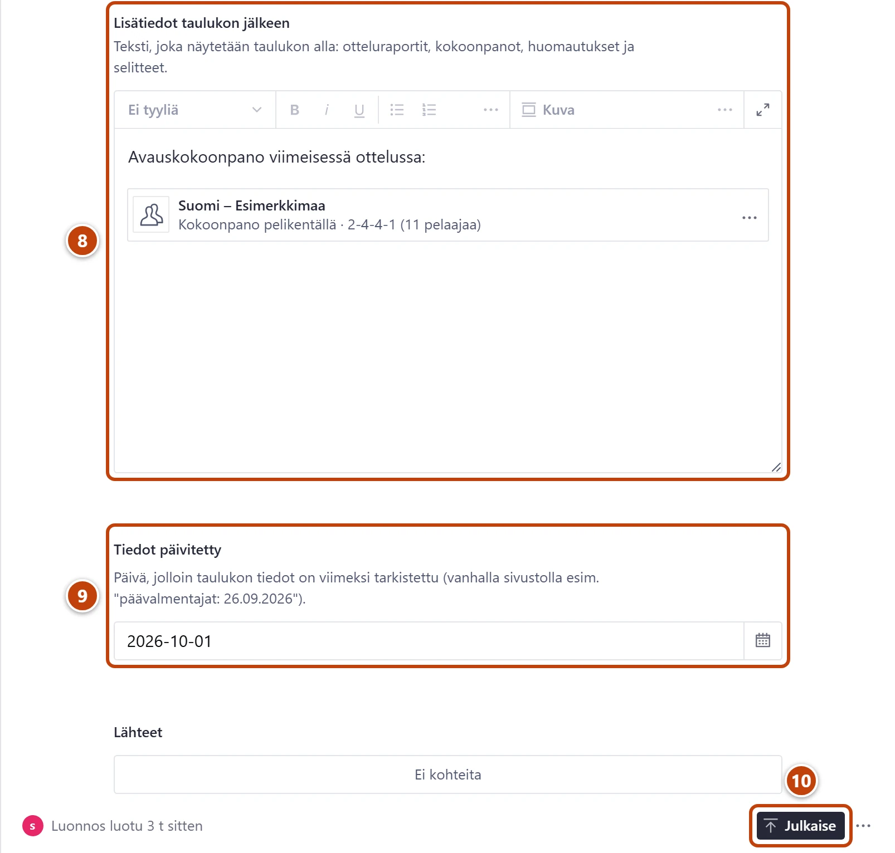
Kirjoita tarvittaessa ottelun tiedot kenttään Lisätiedot taulukon jälkeen. ⑧
Teksti näkyy sivulla taulukon alla.
Kentän Tiedot päivitetty oikeassa reunassa paina kalenterikuvaketta ja valitse tämä päivä. ⑨
Kun kaikki on valmista, paina oikeassa alakulmassa Julkaise. ⑩
Tulos
Oikeaan alakulmaan tulee hetkeksi ilmoitus Dokumentti on julkaistu.
Alapalkissa lukee "Viimeksi julkaistu juuri nyt", ja Julkaise muuttuu harmaaksi.
Taulukko päivittyy sivustolla noin minuutissa.
Lomakkeen yläreunassa kohta Käytetty yhdellä sivulla kertoo, millä sivulla taulukko näkyy.
Avaa se nuolesta, niin linkki vie sivulle.
Lisävalinnat
Uusi rivi: paina taulukon alla Lisää rivi. Tai valitse rivin valikosta ⋮
Lisää rivi yläpuolelle tai Lisää rivi alapuolelle.
Kirjoitit soluun väärin: paina Esc ennen kuin poistut solusta. Jos ehdit jo poistua,
kirjoita oikea arvo uudelleen.
Poistit rivin vahingossa: oikeaan alakulmaan tulee ilmoitus, esimerkiksi Rivi 3 poistettu.
Paina siinä heti Kumoa. Ilmoitus näkyy noin kahdeksan sekuntia.
Lisätiedoista katosi linkki tai teksti: paina heti Ctrl+Z. Vanhemman version saat
versiohistoriasta, katso Peru muutos.
Julkaise-painikkeessa lukee pitkään "Validoidaan dokumenttia…": päivitä selaimen sivu
(F5) ja paina Julkaise uudelleen. Muutokset ovat tallessa.
Haluat perua kaiken julkaisemattoman: avaa Julkaise-painikkeen vierestä valikko
Asiakirjatoiminnot (⋯) ja valitse Hylkää muutokset. Vahvista ikkunassa painamalla
Hylkää muutokset. Sivuston versio ei muutu.
Mikään ei katoa: keskeneräinen taulukko säilyy luonnoksena, vaikka suljet selaimen.
Kun tarvitset kokonaan uuden taulukon: uusi kausi, uusi veikkaus tai uusi tilasto.
Olemassa olevan taulukon päivitys on omassa kortissaan.
Ennen kuin aloitat
Taulukko on helpointa tehdä ensin Excelissä tai Google Sheetsissä.
Mieti, mihin ryhmään taulukko kuuluu. Ryhmä ratkaisee, millä sivulla se näkyy.
Askeleet
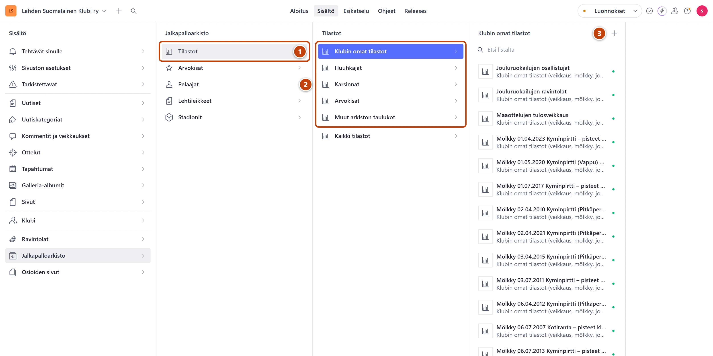
Valitse Jalkapalloarkisto ja sitten Tilastot. ①
Valitse ryhmä, esimerkiksi Klubin omat tilastot. ②
Paina listan yläreunassa plus-painiketta (+). Sen nimi on Luo uusi asiakirja. ③
Ryhmässä Muut arkiston taulukot valitse ensin taulukon kategoria. Muissa ryhmissä se on valmiina.
Uusi taulukko avautuu oikealle. Keskimmäinen lista vaihtuu listaksi Kaikki tilastot.
Kirjoita kenttään Otsikko taulukon nimi.
Kentän Osoite sivustolla vieressä paina Luo.
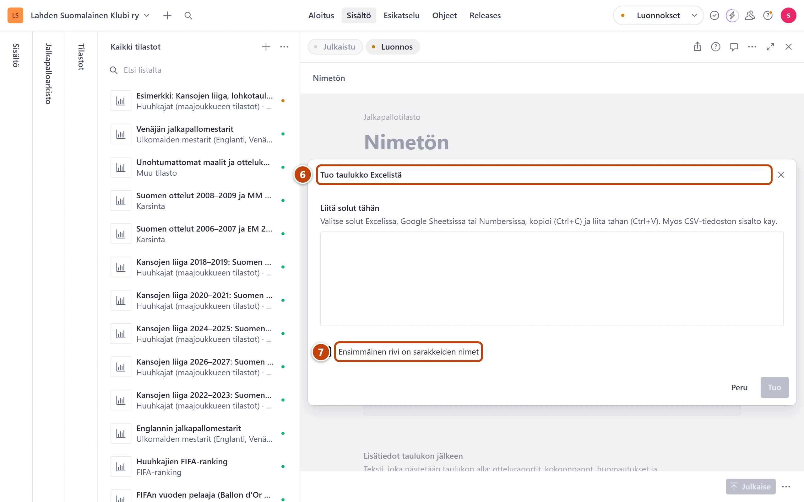
Valitse välilehti Tilastodata ja paina Tuo Excelistä. ⑥
Kopioi solut Excelissä (Ctrl+C) ja liitä ne ikkunaan (Ctrl+V). Jätä rasti
Ensimmäinen rivi on sarakkeiden nimet, jos ylimmällä rivillä on otsikot. ⑦
Tarkista esikatselu. Paina oikeassa alakulmassa painiketta, jossa lukee esimerkiksi
Korvaa taulukko (3 riviä, 4 saraketta).
Taulukko täyttyy. Sarakkeiden tyypit arvataan sisällöstä.
Oikeassa alakulmassa paina Julkaise.
Hyvä tietää
Ryhmän Klubin omat tilastot taulukot ja pelaajatilastot näkyvät vasta, kun ne on liitetty sivuun.
Lisää taulukko sivun kenttään Taulukot. Klubin toiminnassa ja pelaajalla kentän nimi on
Tilastotaulukot. Julkaise sitten myös se sivu.
Tulos
Oikeaan alakulmaan tulee ilmoitus Dokumentti on julkaistu.
Lomakkeen yläreunassa lukee Käytetty yhdellä sivulla. Avaa se nuolesta, niin näet sivun.
Ryhmän Klubin omat tilastot taulukossa siinä on keltainen huomautus, kunnes liität
taulukon sivuun (katso huomautus askelten lopussa).
Taulukko näkyy sivustolla noin minuutin kuluttua.
Lisävalinnat
Sarakkeet yksi kerrallaan: paina Lisää sarake. Anna Sarakkeen nimi ja valitse
kohdassa Mitä sarakkeessa on? tyyppi: Teksti, Numero, Päivämäärä, Vuosi tai
Linkki. Paina Tallenna.
Prosenteille ja desimaaleille valitse Teksti. Kokonaisluvuille Numero.
Rivit: paina Lisää rivi ja kirjoita solut kuten Excelissä.
Teksti taulukon ylle: välilehden Perustiedot kenttä Johdanto.
Monta taulukkoa samalla sivulla: pienempi luku kentässä Järjestys sivulla näkyy ylempänä.
Yläreunassa lukee "Taulukko ei näy vielä millään sivulla. Täytä Osoite sivustolla…":
paina kentän Osoite sivustolla vieressä Luo ja julkaise.
Yläreunassa lukee "Taulukko ei näy vielä millään sivulla. Lisää se sivun…": liitä taulukko
sivun kenttään Taulukot tai Tilastotaulukot ja julkaise sivu.
Kun Huuhkajat-sivulle tarvitaan uusi taulukko, esimerkiksi uuden Kansojen liigan kauden lohko.
Huuhkajat-sivu on jaettu aiheisiin, ja jokaisella aiheella on oma sivunsa.
Ennen kuin aloitat
Kansojen liigan kaudelle tarvitaan myös saman kauden karsintasivu. Tee se ensin:
Lisää karsintasarja.
Askeleet
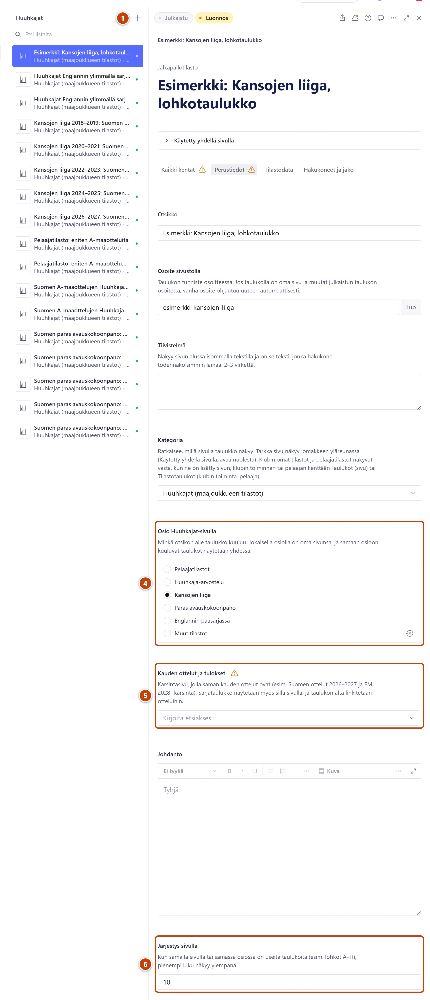
Valitse Jalkapalloarkisto → Tilastot → Huuhkajat ja paina listan yläreunassa
plus-painiketta (+), jonka nimi on Luo uusi asiakirja. ①
Uusi taulukko avautuu oikealle. Kategoria on valmiina.
Kirjoita kenttään Otsikko taulukon nimi, esimerkiksi "Kansojen liiga 2026–2027, lohko B4".
Kentän Osoite sivustolla vieressä paina Luo.
Kohdassa Osio Huuhkajat-sivulla valitse aihe, esimerkiksi "Kansojen liiga". ④
Jos valitsit Kansojen liigan, valitse kenttään Kauden ottelut ja tulokset saman kauden
karsintasivu. ⑤
Kirjoita nimen alkua, esimerkiksi "2026", ja valitse listasta.
Kirjoita kenttään Järjestys sivulla luku. Pienempi luku näkyy ylempänä. ⑥
Täytä taulukko välilehdellä Tilastodata, esimerkiksi painikkeella Tuo Excelistä.
Oikeassa alakulmassa paina Julkaise.
Tulos
Taulukko näkyy valitun aiheen sivulla, esimerkiksi Huuhkajat → Kansojen liiga.
Kansojen liigan taulukko näkyy myös kauden karsintasivulla otteluiden yhteydessä.
Silloin lomakkeen yläreunassa lukee "Käytetty 2 sivulla".
Uusi aihe ilmestyy Huuhkajat-sivulle vasta, kun siinä on julkaistu taulukko.
Lisävalinnat
Sarjataulukkoa päivitetään vain Kansojen liigan taulukkoon. Ottelut ja tulokset kirjoitetaan
karsintasivulle: Lisää karsintasarja.
Julkaise ei onnistu, ja kentässä lukee "Valitse osio, jotta taulukko löytyy oikean otsikon
alta.": valitse aihe kohdassa Osio Huuhkajat-sivulla.
Keltainen "Valitse kauden karsintasivu…": julkaisu onnistuu, mutta taulukko ei näy
karsintasivulla. Valitse karsintasivu kenttään Kauden ottelut ja tulokset.
Karsintasivua ei löydy listasta: sitä ei ole vielä tehty. Katso Lisää karsintasarja.
Uuden kauden alussa teet karsintasarjalle oman sivun. Ottelujen jälkeen päivität sen
tulokset ja otteluraportit. Karsintasivut näkyvät Huuhkajat-sivun alaosassa uusin ensin.
Ennen kuin aloitat
Jos karsintasivu on jo olemassa ja vain päivität tuloksia, siirry suoraan askeleeseen 6.
Askeleet
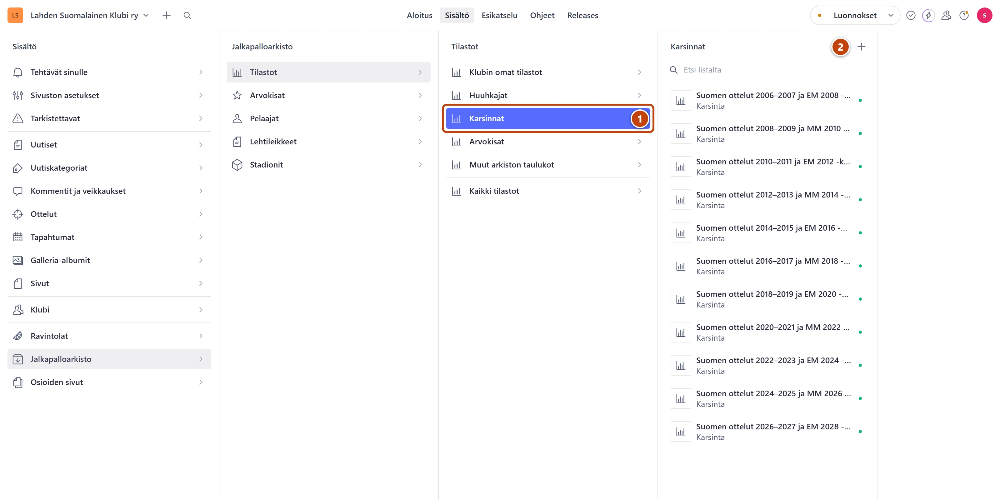
Valitse Jalkapalloarkisto → Tilastot → Karsinnat. ①
Paina listan yläreunassa plus-painiketta (+), jonka nimi on Luo uusi asiakirja. ②
Uusi sivu avautuu oikealle. Kategoria on valmiina.
Kirjoita kenttään Otsikko sivun nimi, esimerkiksi "Suomen ottelut 2026–2027 ja EM 2028 -karsinta".
Kentän Osoite sivustolla vieressä paina Luo.
Kirjoita halutessasi lyhyt esittely kenttään Johdanto.
Välilehdellä Tilastodata kirjoita taulukkoon kauden ottelut ja tulokset.
Taulukon käyttö: Päivitä tilastotaulukko.
Kirjoita otteluraportit ja kokoonpanot kenttään Lisätiedot taulukon jälkeen.
Kun kaikki illan muutokset on tehty, paina oikeassa alakulmassa Julkaise.
Vinkki
Otteluiltana kirjoita tulos, raportti ja kokoonpano kaikki ensin valmiiksi. Muutokset
tallentuvat itsestään. Paina Julkaise vasta lopuksi, yhden kerran.
Tulos
Sivu näkyy osoitteessa www.lahdensuomalainenklubi.com/jalkapalloarkisto/karsinnat/… ja
Huuhkajat-sivun karsintalistassa.
Lomakkeen yläreunan Käytetty yhdellä sivulla avaa sivun.
Lisävalinnat
Saman kauden Kansojen liigan sarjataulukko näkyy tällä sivulla, kun se on liitetty:
Huuhkajat ja Kansojen liiga
Kun haluat näyttää avauskokoonpanon kenttäkuvana, esimerkiksi Huuhkaja-arvostelun parhaan
avauksen. Sivulla pelaajat piirretään pelikentälle riveittäin.
Napsauta kentässä Lisätiedot taulukon jälkeen kohtaa, johon kokoonpano tulee. ②
Tekstikentän työkalupalkin oikeassa reunassa paina kolmea pistettä (⋯) ja valitse
Kokoonpano pelikentällä. ③
Leveällä näytöllä painike näkyy suoraan työkalupalkissa. Ikkuna Kokoonpano avautuu.
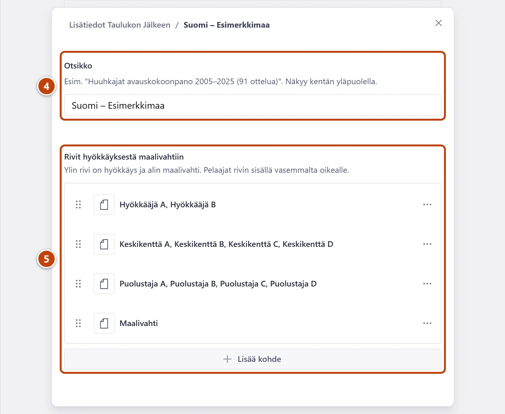
Kirjoita kenttään Otsikko esimerkiksi "Huuhkajat avauskokoonpano 2005–2025 (91 ottelua)". ④
Kohdassa Rivit hyökkäyksestä maalivahtiin paina Lisää kohde. ⑤
Rivin ikkuna avautuu. Ensimmäinen rivi on hyökkäys, viimeinen maalivahti.
Kohdassa Pelaajat paina Lisää kohde. Kirjoita pelaajan Nimi ja
Luku (valinnainen). Luku näkyy pelaajan pallossa.
Palaa rivin ikkunaan: paina ikkunan yläreunan polusta Pelaajat. Lisää rivin
seuraava pelaaja samoin. Lisää pelaajat vasemmalta oikealle.
Kun rivi on valmis, paina yläreunan polusta kokoonpanon otsikkoa. Lisää seuraava rivi
toistamalla askeleet 5–7.
Kirjoita halutessasi Selite (valinnainen). Sulje ikkuna oikean yläkulman ruksista
ja paina oikeassa alakulmassa Julkaise.
Hyvä tietää
Ruksi sulkee kaikki ikkunat kerralla. Mitään ei katoa: jatka kohdasta "Muokkaa olemassa
olevaa" alla.
Tulos
Sivulla näkyy pelikenttä, jolla pelaajat ovat riveittäin ylhäältä alas.
Studion tekstissä kokoonpano näkyy laatikkona. Siinä lukee rivien pelaajamäärät
hyökkäyksestä alkaen, esimerkiksi "2-4-4-1 (11 pelaajaa)".
Lisävalinnat
Muokkaa olemassa olevaa: paina tekstissä kokoonpanon laatikon oikeasta reunasta ⋯ ja valitse
Muokkaa. Avaa rivi napsauttamalla sitä.
Järjestä pelaajia: raahaa pelaajaa rivin sisällä.
Jos jokin menee vikaan
Keltainen "Kentällä on 10 pelaajaa (yleensä 11).": tarkista pelaajat. Julkaisu onnistuu silti.
Punainen "Rivillä pitää olla 1–6 pelaajaa.": rivi on tyhjä tai siinä on liikaa pelaajia.
Punainen "Kokoonpanossa pitää olla 1–6 riviä.": poista ylimääräinen rivi tai lisää puuttuva.
Kun arkistoon tulee uusi stadion, esimerkiksi klubin matkan kohde. Stadionilla on oma sivunsa.
Askeleet
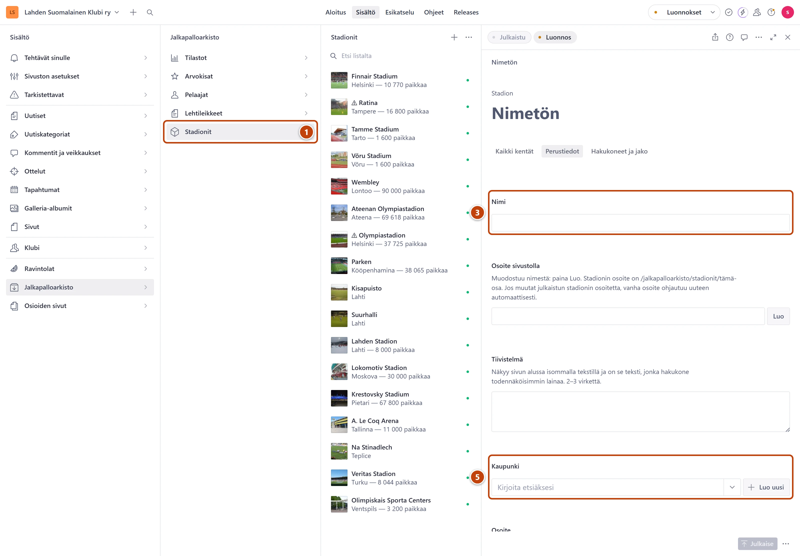
Valitse Jalkapalloarkisto ja sitten Stadionit. ①
Paina listan yläreunassa plus-painiketta (+).
Kirjoita Nimi. ③
Kentän Osoite sivustolla vieressä paina Luo.
Kirjoita kenttään Kaupunki nimen alkua ja valitse listasta. ⑤
Täytä halutessasi Osoite, Kapasiteetti, Rakennusvuosi ja Kuvaus.
Lisää kuvat kenttään Kuvat.
Oikeassa alakulmassa paina Julkaise.
Tulos
Stadion näkyy arkiston stadioneissa ja omalla sivullaan.
Lomakkeen yläreunan Käytetty yhdellä sivulla avaa sivun.
Lisävalinnat
Karttapaikka on stadionin sijainti kartalla. Kenttä on valinnainen. Jätä se tyhjäksi, jos et
tiedä koordinaatteja. Kenttien nimet ovat englanniksi: Latitude on leveysaste (esimerkiksi
60.98) ja Longitude pituusaste (esimerkiksi 25.66). Jätä Altitude tyhjäksi.
Litmanen-osiossa on neljä sivua: Jari Litmanen, Lehtileikkeet, Patsas ja Litmasen loukkaantumiset.
Tällä kortilla lisäät uuden lehtijutun tai patsaskuvan.
Askeleet
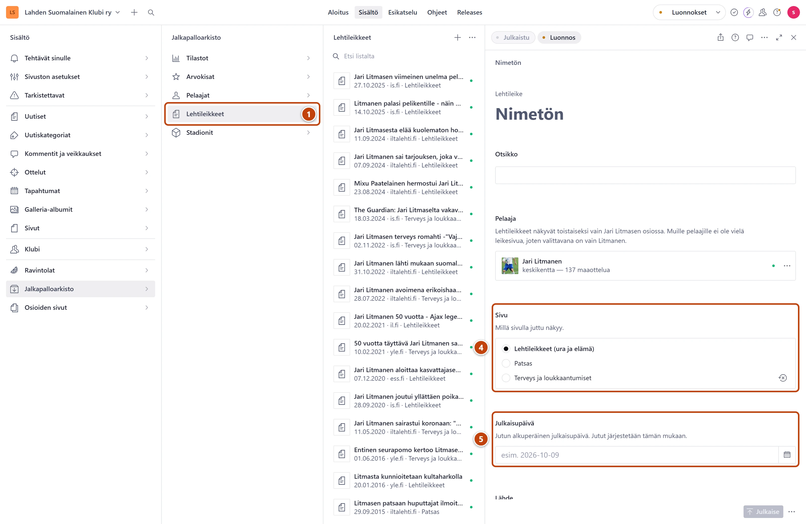
Valitse Jalkapalloarkisto ja sitten Lehtileikkeet. ①
Paina listan yläreunassa plus-painiketta (+).
Pelaaja on valmiina: Jari Litmanen.
Kirjoita jutun Otsikko.
Valitse Sivu: Lehtileikkeet (ura ja elämä), Patsas tai Terveys ja loukkaantumiset. ④
Valitse Julkaisupäivä: päivä, jolloin juttu alun perin julkaistiin. ⑤
Kirjoita Lähde, esimerkiksi is.fi, ja halutessasi Linkki alkuperäiseen juttuun (valinnainen).
Kirjoita tai liitä jutun Teksti ja paina oikeassa alakulmassa Julkaise.
Tulos
Juttu näkyy valitulla sivulla. Jutut ovat julkaisupäivän mukaan uusin ensin.
Sivulla näkyy jutun ensimmäinen kappale. Loput avautuvat "Lue koko juttu" -painikkeesta.
Lisävalinnat
Uusi patsaskuva:
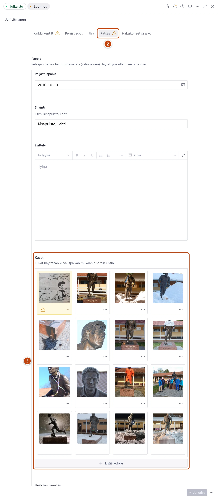
Valitse Jalkapalloarkisto → Pelaajat → Jari Litmanen.
Valitse välilehti Patsas. ②
Lisää kuva kenttään Kuvat. ③
Kirjoita Vaihtoehtoinen teksti (alt) ja valitse Kuvauspäivä.
Oikeassa alakulmassa paina Julkaise.
Patsaskuvat näkyvät sivulla kuvauspäivän mukaan uusin ensin.
Muut:
Uusi loukkaantuminen: lisää rivi Litmasen loukkaantumistaulukkoon. Taulukko on Jari Litmasen
lomakkeella välilehden Ura kentässä Tilastotaulukot. Katso
Päivitä tilastotaulukko. Yhteenveto ja kaavio päivittyvät itsestään.
Yleiskatsaus: Jari Litmasen perustiedot, seurat ja saavutukset, katso Pelaaja.
Jos jokin menee vikaan
Julkaise ei onnistu: Otsikko, Sivu, Julkaisupäivä ja Teksti ovat pakollisia.
Keltainen "Ilman päivämäärää kuva näytetään listan lopussa.": valitse kuvalle Kuvauspäivä.
Lehtijuttuja voi lisätä vain Litmaselle. Muiden pelaajien juttusivua varten ota yhteyttä
tukihenkilöön.
Päivitä järkytykset, maailman parhaat tai ulkomaiset mestarit
Kesto: noin 10 minuuttia
Milloin
Kolmella arkiston aiheella on oma sivunsa: TOP 10 järkytykset, Maailman parhaat ja Ulkomaiset mestarit.
Niiden taulukot ovat ryhmässä Muut arkiston taulukot.
Askeleet
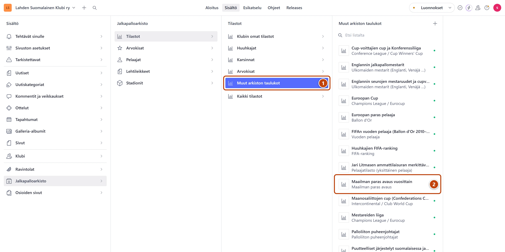
Valitse Jalkapalloarkisto → Tilastot → Muut arkiston taulukot. ①
Valitse taulukko listasta, esimerkiksi "Maailman paras avaus vuosittain". ②
Kun klubilainen on antanut pisteet ravintolalle, mutta ei lähettänyt niitä arvostelulomakkeella.
Ravintolan arvosana lasketaan klubilaisten pisteistä itsestään. Sitä ei kirjoiteta käsin.
Askeleet
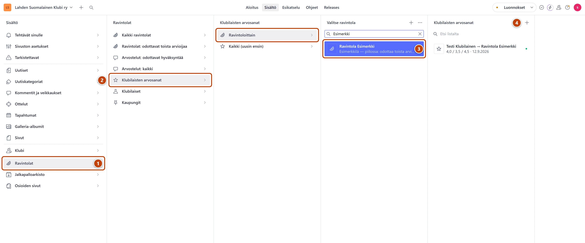
Vasemmasta valikosta valitse Ravintolat. ①
Valitse Klubilaisten arvosanat ja sitten Ravintoloittain. ②
Listassa Valitse ravintola kirjoita ravintolan nimi kenttään Etsi listalta ja valitse ravintola. ③
Näet ravintolan kaikki klubilaisten arvosanat, uusin ensin.
Paina oikeanpuoleisimman listan Klubilaisten arvosanat yläreunassa plus-painiketta (+). ④
Älä paina listan Valitse ravintola plussaa: se tekee uuden ravintolan.
Ravintola ja tämä päivä ovat valmiina.
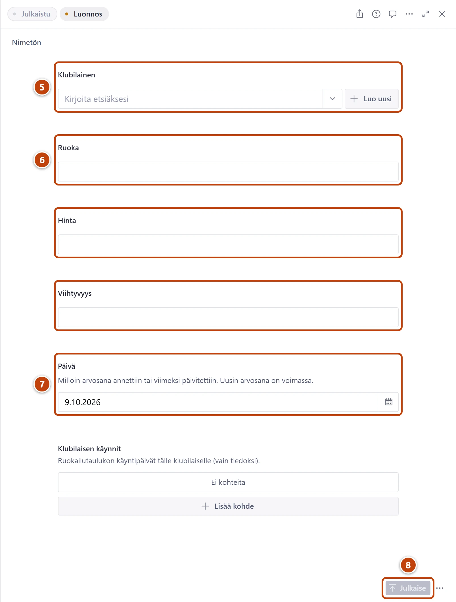
Kirjoita kenttään Klubilainen nimen alkua ja valitse nimi listasta. ⑤
Kirjoita pisteet kenttiin Ruoka, Hinta ja Viihtyvyys. ⑥
Pisteet ovat 1–5. Desimaalin voi kirjoittaa pilkulla tai pisteellä, esimerkiksi 3,5.
Muuta tarvittaessa Päivä käyntipäiväksi. ⑦
Oikeassa alakulmassa paina Julkaise. ⑧
Tulos
Ravintolan arvosana päivittyy itsestään hetken kuluttua.
Ravintola näkyy sivustolla, kun vähintään kaksi klubilaista on arvioinut sen.
Ravintolan sivulla taulukko Klubilaisten arvosanat näyttää uudet pisteet.
Lisävalinnat
Sama klubilainen kävi uudelleen: älä tee uutta arvosanaa. Avaa hänen vanha arvosanansa
samasta listasta, muuta pisteet ja Päivä, ja paina Julkaise. Uusin arvosana on voimassa.
Uusi klubilainen: valitse Ravintolat → Klubilaiset, paina plus-painiketta (+),
kirjoita Nimi ja paina Julkaise.
Kaikki arvosanat yhdessä listassa: Klubilaisten arvosanat → Kaikki (uusin ensin).
Jos jokin menee vikaan
Punainen "Tällä klubilaisella on jo arvosana tähän ravintolaan…": muokkaa vanhaa
arvosanaa, älä lisää uutta. Poista tämä keskeneräinen arvosana: Asiakirjatoiminnot →
Poista → Poista nyt.
Punainen "Arvosana on 1,0–5,0.": pisteet ovat liian suuret tai pienet. Tarkista luku.
Kun arvosana on kirjattu väärälle ravintolalle tai klubilaiselle, tai sama arvosana on kahdesti.
Jos vain pisteet ovat väärin, korjaa pisteet. Poistoa ei silloin tarvita.
Askeleet
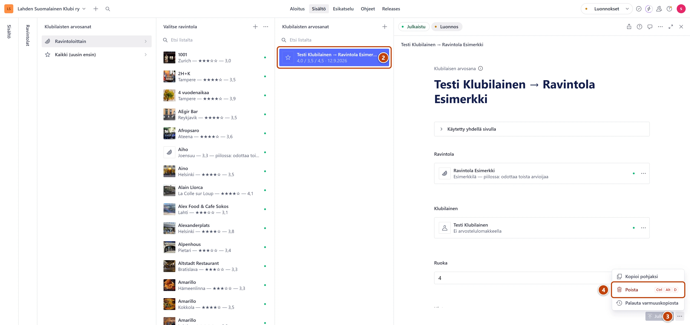
Valitse Ravintolat → Klubilaisten arvosanat → Ravintoloittain. Kirjoita ravintolan
nimi kenttään Etsi listalta ja valitse ravintola.
Avaa poistettava arvosana. ②
Avaa Julkaise-painikkeen vierestä valikko Asiakirjatoiminnot. ③
Valitse Poista. ④
Ikkunassa Poista dokumentti? paina Poista nyt.
Tulos
Arvosana katoaa listasta.
Ravintolan arvosana lasketaan uudelleen itsestään.
Jos ravintolalle jää alle kaksi klubilaisen arvosanaa, se piiloutuu sivustolta. Alapalkissa näkyy
silloin merkki Odottaa toista arvioijaa.
Vanhan sivuston ravintolalla palautuu vanha arvosana, jos kaikki klubilaisten arvosanat poistetaan.
Sen näet välilehden Arvostelu kohdasta Aiempi arvosana.
Lisävalinnat
Klubilaisen lomakkeelta lähettämä arvostelu ei ole tässä listassa. Avaa se kohdasta
Ravintolat → Arvostelut: kaikki. Jos arvostelu ei saa vaikuttaa arvosanaan, tyhjennä kenttä
Klubilainen ja paina Julkaise. Koko arvostelun poisto: Hyväksy tai hylkää arvostelu.
Kävijän tai klubilaisen lomakkeella lähettämä arvostelu odottaa hyväksyntääsi. Se ei näy
sivustolla ennen kuin hyväksyt sen. Aloituksessa näet, montako arvostelua odottaa.
Vinkki
Käy jono läpi mieluiten samana päivänä. Klubilaiset odottavat näkevänsä arvostelunsa sivulla.
Askeleet
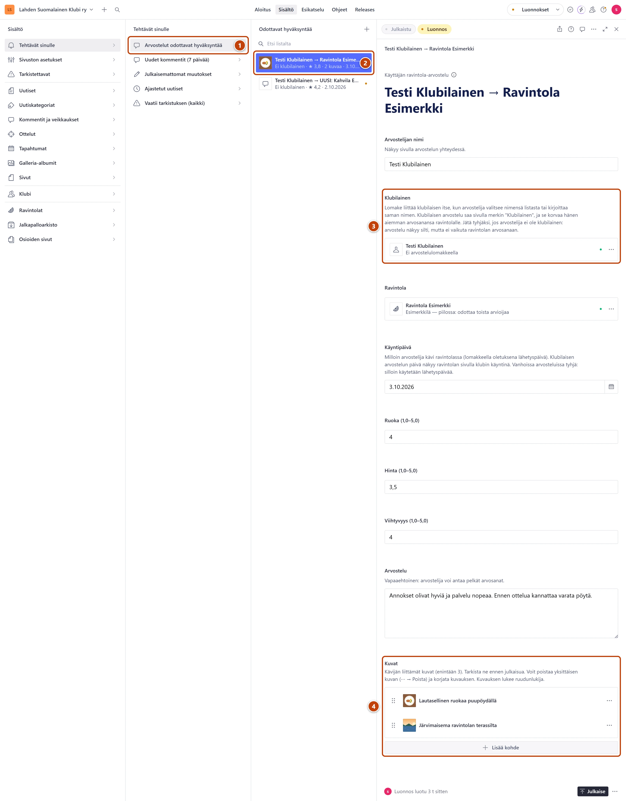
Valitse Tehtävät sinulle → Arvostelut odottavat hyväksyntää. ①
Sama lista löytyy myös kohdasta Ravintolat → Arvostelut: odottavat hyväksyntää.
Avaa arvostelu listasta. ②
Rivillä näkyy arvostelija, ravintola, arvosana ja kuvien määrä.
Jos rivillä lukee UUSI ja ravintolan nimi, katso Uusi ravintola arvostelusta.
Tarkista kohta Klubilainen. ③
Jos se on tyhjä mutta arvostelija on klubilainen, valitse hänen nimensä. Muuten jätä tyhjäksi.
Lue Arvostelu ja katso Kuvat. ④
Jos jokin kuva on sopimaton, paina kuvan rivin oikeasta reunasta kolmea pistettä (⋯) ja
valitse Poista. Kuva poistuu heti, ilman kysymystä.
Hyväksy arvostelu: paina oikeassa alakulmassa Julkaise. ⑥
Tulos
Arvostelu ja sen kuvat näkyvät ravintolan sivulla noin minuutin kuluttua.
Arvostelu poistuu jonosta. Avoinna oleva lista päivittyy, kun avaat sen uudelleen.
Klubilaisen arvostelu korvaa hänen aiemmat pisteensä. Ravintolan arvosana päivittyy itsestään.
Oikeaan alakulmaan avautuu kysymys. Lue teksti ja paina Vahvista.
Varoitus
Yksittäisen kuvan poisto ennen julkaisua on turvallinen. Sen sijaan Hylkää arvostelu ja
Poista arvostelu poistavat arvostelun ja kaikki sen kuvat pysyvästi. Niitä ei voi palauttaa.
Muut:
Jo julkaistun arvostelun poisto: avaa se kohdasta Ravintolat → Arvostelut: kaikki.
Valikossa lukee silloin Poista arvostelu.
Kuvan kuvaus: kentän Kuvaus (alt-teksti) lukee ruudunlukija näkövammaiselle. Voit tarkentaa
sitä, esimerkiksi "Paahdettu lohi".
Jos jokin menee vikaan
Julkaise-painiketta ei ole, vain vihreä Hyväksy ja luo ravintola: kävijä ehdotti uutta
ravintolaa. Katso Uusi ravintola arvostelusta.
Keltainen "Arvostelijaa ei ole liitetty klubilaiseen…": normaali, jos arvostelija ei ole
klubilainen. Julkaisu onnistuu.
Ravintola ei näy sivustolla hyväksynnän jälkeen: katso Ravintola ei näy.
Sivustolla on keltainen Esikatselutila-palkki: paina palkista "Poistu esikatselusta".
Näet sivun kuten kävijät.
Kävijä arvosteli ravintolan, jota hakemistossa ei vielä ole. Listassa rivillä lukee UUSI ja
ravintolan nimi. Hyväksyntä luo samalla ravintolan.
Askeleet
Valitse Tehtävät sinulle → Arvostelut odottavat hyväksyntää ja avaa UUSI-rivi. ①
Tarkista laatikosta Kävijän ehdottama uusi ravintola kentät Nimi, Kaupunki ja Maa. ②
Korjaa kirjoitusvirheet suoraan kenttiin.
Lisää halutessasi Osoite tai verkkosivu.
Onko ravintola jo hakemistossa toisella nimellä? Valitse se kenttään Ravintola. ④
Paina silloin Julkaise ja lopeta tähän.
Muuten paina oikeassa alakulmassa vihreää Hyväksy ja luo ravintola. ⑤
Lue ikkunan teksti ja paina Vahvista.
Jos ikkuna kertoi uudesta kaupungista, valitse sille maakunta.
Katso Lisää uusi kaupunki.
Tulos
Ravintola on luotu, ja arvostelu on julkaistu sen sivulle.
Ravintola näkyy sivustolla vasta, kun kaksi klubilaista on arvioinut sen. Siihen asti ravintolan
alapalkissa on merkki Odottaa toista arvioijaa.
Lisävalinnat
Saman illan toinen arvostelu samasta ravintolasta: paina taas Hyväksy ja luo ravintola.
Ikkuna kertoo, että ravintola on jo hakemistossa. Arvostelu liitetään siihen, eikä uutta synny.
Jos nimet poikkeavat selvästi, esimerkiksi "Savu" ja "Bistro Savu", hyväksy ensimmäinen.
Valitse toiselle kenttään Ravintola juuri luotu ravintola ja paina Julkaise.
Kun ravintolan kortti tarvitsee kuvan, osoitteen tai sanallisen arvion. Tai kun ravintola on
lopettanut. Arvosanaa et kirjoita tähän: se lasketaan klubilaisten pisteistä.
Askeleet
Valitse Ravintolat → Kaikki ravintolat ja avaa ravintola. ①
Välilehdellä Perustiedot täytä tarvittaessa Puhelin, Verkkosivut ja Hintaluokka. ②
Lisää kuvat kenttään Kuvat. Ensimmäinen kuva näkyy kortissa.
Välilehdellä Arvostelu kirjoita Tuomio yhdellä rivillä ja tarvittaessa
Sanallinen arvostelu, Plussat ja Miinukset. ④
Välilehdellä Sijainti tarkista Kaupunki ja täytä Katuosoite ja Postinumero. ⑤
Oikeassa alakulmassa paina Julkaise.
Tulos
Ravintolan kortti ja sivu päivittyvät sivustolla noin minuutissa.
Jos ravintola odottaa toista arvioijaa, tiedot näkyvät vasta, kun se tulee näkyviin.
Lisävalinnat
Ravintola on lopettanut: välilehdellä Perustiedot valitse Toiminta loppunut. Kirjoita
halutessasi Lisätieto lopettamisesta. Sivu säilyy, mutta se merkitään päättyneeksi.
Klubin käynti: välilehdellä Arvostelu lisää päivä kohdan Käynnit alkuun. Uusin käynti
on ylimpänä. Kirjoita tarvittaessa Käynnin yhteys, esimerkiksi "Jouluruokailu".
Korttiin lyhyt otteluvinkki: Matka stadionille tai ottelu-yhteys, esimerkiksi "15 min stadionille".
Vinkit ottelupäivälle: Ottelupäivänä.
Uusi ravintola ilman arvostelua: paina Kaikki ravintolat -listan yläreunassa plus-painiketta (+).
Täytä Nimi ja paina kentän Osoite sivustolla vieressä Luo. Valitse välilehdellä
Sijainti kenttään Kaupunki kaupunki: kirjoita nimen alkua ja valitse listasta.
Julkaise ja lisää sitten klubilaisten pisteet.
Kartta: välilehden Sijainti kenttä Karttapaikka on valinnainen. Sen kenttien nimet ovat
englanniksi: Latitude on leveysaste ja Longitude pituusaste. Jätä Altitude tyhjäksi.
Kun ravintola tai stadion on kaupungissa, jota listassa ei vielä ole. Kaupunki näkyy ravintolasivun
suodattimissa, kun sinne on julkaistu ensimmäinen ravintola.
Askeleet
Valitse Ravintolat ja sitten Kaupungit. ①
Paina listan yläreunassa plus-painiketta (+).
Kirjoita Nimi suomeksi, esimerkiksi "Jyväskylä" tai "Tukholma". ③
Kentän Osoite suodattimessa vieressä paina Luo. ④
Tarkista Maa. Valmiina on "Suomi". ⑤
Kirjoita maa aina samalla tavalla: "Saksa", "Alankomaat", "Iso-Britannia", "Tšekki".
Suomen kaupungille valitse Maakunta. ⑥
Kylälle valitaan sen kunnan maakunta, esimerkiksi Vääksy: Päijät-Häme.
Oikeassa alakulmassa paina Julkaise.
Tulos
Kaupunki on valittavissa ravintolan ja stadionin kentässä Kaupunki.
Ravintolasivun alue- ja kaupunkivalikot päivittyvät itsestään.
Lisävalinnat
Ravintola, jonka kaupunkia ei tiedetä, esimerkiksi laivalla: tee kaupunki maan nimellä, esimerkiksi "Ruotsi".
Hyväksy ja luo ravintola voi luoda kaupungin itse. Avaa se silloin tästä listasta ja valitse maakunta.
Jos jokin menee vikaan
Keltainen "Valitse maakunta, jotta kaupungin ravintolat löytyvät maakuntasuodattimella.":
valitse Maakunta.
Punainen "Kirjoita maan nimi isolla alkukirjaimella…": korjaa maan nimi, esimerkiksi "Saksa".
Kaupunki puuttuu maakuntavalikosta: tarkista kaupungin Maakunta.
Klubilaiset arvostelevat ravintolat puhelimella sivuston lomakkeella. Lähetä heille linkki, ja
pidä klubilaisten nimilista ajan tasalla. Lomakkeelta tulleet arvostelut odottavat hyväksyntääsi.
Neuvo heitä lisäämään lomake puhelimen kotinäyttöön. Lomake aukeaa silloin kuin sovellus.
Androidissa: lähetetyn arvostelun jälkeen lomake näyttää painikkeen "Lisää kotinäyttöön".
iPhonessa: Safarin Jaa-painike ja sitten "Lisää Koti-valikkoon".
Klubilainen valitsee ensimmäisellä kerralla nimensä listasta. Puhelin muistaa sen.
Uusi klubilainen: valitse Studiossa Ravintolat → Klubilaiset ja paina plus-painiketta (+). ④
Kirjoita Nimi, esimerkiksi "Mikko K.". ⑤
Varmista, että kytkin Näytä arvostelulomakkeella on päällä (tumma). Se on valmiiksi päällä.
Paina oikeassa alakulmassa Julkaise. ⑥
Tulos
Uusi nimi näkyy heti lomakkeen nimilistassa.
Lähetetyt arvostelut tulevat Studioon kohtaan Tehtävät sinulle → Arvostelut odottavat hyväksyntää.
Lisävalinnat
Klubilainen lopettaa: avaa hänet, käännä kytkin Näytä arvostelulomakkeella pois päältä ja paina
Julkaise. Nimi poistuu lomakkeelta, mutta vanhat arvosanat säilyvät.
Klubilaista ei voi poistaa, koska ravintoloiden arvosanat viittaavat häneen.
Veikkausliigan ottelut tulevat otteluohjelmaan itsestään. Lisää käsin maajoukkueen ottelut ja
ottelut, joihin klubi lähtee. Ottelut näkyvät etusivulla ja Ottelut-sivulla.
Askeleet
Vasemmasta valikosta valitse Ottelut. ①
Paina listan yläreunassa plus-painiketta (+). ②
Kentän Alkamisaika oikeassa reunassa paina kalenterikuvaketta. Valitse päivä ja kirjoita
kellonaika kalenterin alareunaan. ③
Voit myös kirjoittaa ajan suoraan kenttään muodossa 2026-10-20 19:00. Muoto 20.10.2026 ei käy.
Kirjoita kenttään Kotijoukkue nimen alkua ja valitse ehdotus listasta. ④
Suomen miesten maajoukkue on tasan "Suomi".
Tee samoin kentässä Vierasjoukkue.
Täytä halutessasi Kilpailu ja Stadion.
Jos klubi on katsomossa, käännä kytkin Klubi paikalla päälle. Yhteiselle matkalle käännä
päälle Vierasmatka. ⑦
Oikeassa alakulmassa paina Julkaise.
Tulos
Ottelu näkyy etusivulla ja Ottelut-sivulla noin minuutissa.
Huuhkajien ottelu korostetaan. Etusivun laskuri siirtyy siihen itsestään, jos se on seuraava.
Suomen kotiottelu saa merkinnän Klubi paikalla itsestään.
Pelattu ottelu poistuu otteluohjelmasta pari tuntia alkamisen jälkeen.
Lisävalinnat
Merkintä Veikkausliigan otteluun: lisää ottelu samalla päivällä ja samoilla joukkueilla ja
valitse Klubi paikalla tai Vierasmatka. Merkintä yhdistyy automaattiseen otteluun.
Ajan muutos: avaa ottelu listasta, muuta Alkamisaika ja paina Julkaise.
Muiden seurojen ottelut etusivulle: katso Etusivu.
Jos jokin menee vikaan
Keltainen "Tarkoititko "FC Lahti"?…": korjaa nimi ehdotuksen mukaiseksi. Muuten merkintä ei
yhdisty oikeaan otteluun. Muiden maiden nimet, esimerkiksi "Albania", ovat kunnossa.
Alkamisaika on punainen: aika on väärässä muodossa. Valitse se kalenterista.
Ottelu ei näy: tarkista, että painoit Julkaise. Lomakkeen yläreunassa lukee
"Ottelu on jo pelattu…", jos aika on mennyt.
Muut Suomen joukkueet: kirjoita tarkenne, esimerkiksi "Suomi (naiset)" tai "Suomi U21".
Kun haluat näyttää tapahtuman tai matkan kuvat sivuston galleriassa. Albumi saa oman sivunsa.
Ennen kuin aloitat
Kokoa albumin kuvat yhteen kansioon tietokoneelle.
Askeleet
Vasemmasta valikosta valitse Galleria-albumit. ①
Paina listan yläreunassa plus-painiketta (+).
Kirjoita Albumin nimi, esimerkiksi "Vappu 2026". ③
Kentän Osoite sivustolla vieressä paina Luo.
Valitse Päivämäärä. Halutessasi valitse Liittyvä tapahtuma (valinnainen).
Kohdassa Kansikuva paina Lataa ja valitse kuva. Kirjoita sille Vaihtoehtoinen teksti (alt). ⑥
Raahaa kaikki kuvat kansiosta kerralla kenttään Kuvat. ⑦
Kuvat latautuvat hetken. Järjestä ne tarvittaessa raahaamalla.
Oikeassa alakulmassa paina Julkaise.
Tulos
Albumi näkyy galleriassa ja omalla sivullaan noin minuutissa.
Kuvaa napsauttamalla kävijä näkee sen suurena.
Lisävalinnat
Kuvan kuvaus: napsauta kuvaa. Avautuvassa ikkunassa kirjoita Mitä kuvassa on (alt). Se on suositeltava, ei pakollinen.
Ilman sitä sivu nimeää kuvan albumin mukaan, esimerkiksi "Vappu 2026, kuva 3/40".
Kuvateksti suurennetun kuvan alle: Kuvateksti (valinnainen).
Kuvauksia voi lisätä myöhemmin. Julkaise muutosten jälkeen uudelleen.
Ensimmäinen albumi: Galleria näkyy valikossa vasta, kun lisäät sen sinne. Katso
Valikko ja alatunniste.
Jos jokin menee vikaan
Julkaise ei onnistu: Albumin nimi, Osoite sivustolla, Päivämäärä ja
Kansikuva ovat pakollisia, ja kuvia pitää olla vähintään yksi.
Keltainen "Kuvaus auttaa näkövammaisia kävijöitä. Voit julkaista myös ilman sitä.":
julkaisu onnistuu silti.
Googlen hakutuloksen teksti: välilehti Hakukoneet ja jako, kenttä Kuvaus hakutuloksissa (valinnainen).
Jos jokin menee vikaan
Julkaise ei onnistu, ja kuvan kohdalla on punaista: kuvasta puuttuu kuvaus. Kirjoita Vaihtoehtoinen teksti (alt).
Poisto ja kopiointi ovat harmaina, eikä osoitetta voi muuttaa. Tämä on tarkoituksellista: sivusto hakee tämän sivun aina samasta osoitteesta. Sisältöä saat muokata vapaasti.
Kun klubin toiminta on taas pidetty, esimerkiksi mölkkyturnaus tai jouluruokailu.
Vuosimerkinnät näkyvät toiminnan omalla sivulla, uusin ensin. Kaikki toiminnot ovat sivulla
https://www.lahdensuomalainenklubi.com/klubi/toiminta.
Lomakkeen yläreunasta valitse välilehti Vuosittain. ⑤
Kohdan Vuosittaiset merkinnät alla paina Lisää kohde. ⑥
Uuden vuoden ikkuna avautuu. Uusi vuosi tulee listan loppuun.
Kirjoita Vuosi. Se on ainoa pakollinen kenttä.
Halutessasi täytä Päivämäärä, Otsikko, Paikka, Osallistujat ja Kuvaus.
Osallistujat kirjoitetaan yksi kerrallaan: kirjoita etunimi ja paina Enter.
Monesko kerta kirjoitetaan tavallisena lukuna, esimerkiksi 37. Sivulla se näkyy muodossa (37.).
Sulje ikkuna oikean yläkulman ruksista ja paina oikeassa alakulmassa Julkaise.
Tulos
Listassa näkyy uusi rivi, esimerkiksi "2026".
Toiminnan sivulla uusi vuosi on ensimmäisenä viimeistään minuutin kuluttua.
Lisävalinnat
Linkki matkakuvaukseen tai videoon: avaa vuoden kohta Linkki. Kirjoita Linkin teksti, esimerkiksi "Matkakuvaus". Valitse sitten Mihin linkki vie?. Ohje: Tee linkki.
Vuoden kuvat: kohta Kuvat vuoden kentissä.
Taulukot, esimerkiksi mölkyn pisteet: välilehden Vuosittain kenttä Tilastotaulukot. Taulukko tehdään ensin jalkapalloarkistoon: Tee uusi taulukko.
Pohjaksi olemassa oleva toiminta: avaa samankaltainen toimintamuoto. Valitse Julkaise-painikkeen vieressä olevasta valikosta Kopioi pohjaksi. Anna kopiolle uusi nimi ja paina osoitteen kohdalla Luo.
Jos jokin menee vikaan
Julkaise ei onnistu: Toimintamuodon nimi ja Osoite sivustolla ovat pakollisia.
Toiminta on listassa väärässä kohdassa: muuta lukua Järjestys listassa. Katso muiden toimintojen luvut ja valitse luku niiden väliltä.
Uuden kauden taulukko on tehty kohtaan Jalkapalloarkisto → Tilastot → Klubin omat tilastot ja julkaistu. Ohje: Tee uusi taulukko.
Pelkkä tulosten päivitys ei vaadi tätä korttia: päivitä taulukko suoraan. Ohje: Päivitä tilastotaulukko.
Askeleet
Vasemmasta valikosta valitse Klubi. ①
Valitse Palloveikkaus. ②
Valitse Veikkausten alasivut. ③
Valitse veikkaus, esimerkiksi Veikkausliigan palloveikkaus.
Muokkaa sääntöjä tarvittaessa kentässä Pääsisältö. ⑤
Kohdan Taulukot alla paina Lisää kohde. ⑥
Listan loppuun tulee tyhjä rivi. Kirjoita sen kenttään uuden taulukon nimen alkua ja valitse
taulukko listasta.
Vedä uusi taulukko kahvasta (⋮⋮) listan alkuun. ⑧
Ylin taulukko näkyy sivulla ensimmäisenä.
Oikeassa alakulmassa paina Julkaise.
Tulos
Uuden kauden taulukko näkyy veikkauksen sivulla ylimpänä viimeistään minuutin kuluttua.
Vanhat kaudet näkyvät sen alla.
Lisävalinnat
Uusi veikkaus omalle sivulleen: avaa Veikkausten alasivut ja paina listan yläreunassa plus-painiketta (+). Kirjoita Otsikko. Kirjoita kenttään Osoite sivustolla alku klubi/palloveikkaus/ ja perään veikkauksen nimi, esimerkiksi klubi/palloveikkaus/mestarisarja. Julkaise.
Palloveikkaus-pääsivun teksti ja kuva: Klubi → Palloveikkaus → Palloveikkaus-sivu.
Veikkauslomake uutisen alle (jäsenet veikkaavat sarjajärjestyksen): Veikkaus ja kommentit.
Jos jokin menee vikaan
Taulukkoa ei löydy listasta: taulukkoa ei ole julkaistu, tai kirjoitit nimen eri tavalla. Avaa taulukko ja julkaise se ensin.
Uusi veikkaus ei näy listassa Veikkausten alasivut: osoitteen alusta puuttuu klubi/palloveikkaus/. Sivu on silloin listassa Sivut. Korjaa osoite ja julkaise.
Punainen "Tämä osoite on sivuston oma osio, joten sivu ei näkyisi siinä. Valitse toinen osoite.": osoitteessa on liian monta osaa. Käytä muotoa klubi/palloveikkaus/nimi.
Muuta tarvittaessa Katuosoite, Postinumero ja Kaupunki.
Muuta tarvittaessa Yleinen sähköposti ja Puhelin. ⑤
Halutessasi täytä Y-tunnus ja IBAN.
Uusi someosoite: kohdan Sosiaaliset mediat alla paina Lisää kohde. ⑦
Valitse Alusta, esimerkiksi Facebook. Kirjoita Verkko-osoite, joka alkaa https://.
Oikeassa alakulmassa paina Julkaise.
Tulos
Uudet tiedot näkyvät sivujen alareunassa ja yhteystietosivulla viimeistään minuutin kuluttua.
Aloituksen kohta Täydennä perustiedot ei enää muistuta puuttuvasta tiedosta.
Etusivun yläosa päivittyy itsestään. Siinä näkyy uusin juttu isona. Oikealla olevassa
Seuraavaksi-kortissa näkyvät seuraava Huuhkajien ottelu laskurin kanssa ja seuraava tapahtuma.
Muokkaa yläosaa, kun haluat nostaa tietyn jutun, vaihtaa taustakuvan tai pikalinkit.
Etusivulla on yläosan alla lohkoja, esimerkiksi jutut, otteluohjelma ja ravintola-arviot.
Tässä muutat niiden järjestystä, piilotat lohkon tai lisäät uuden. Lohkon sisältö,
esimerkiksi jutut ja ottelut, tulee itsestään.
Lomakkeen yläreunasta valitse välilehti Lohkot. ③
Lohkot ovat listassa samassa järjestyksessä kuin etusivulla.
Järjestys: tartu lohkon kahvaan (⋮⋮) ja vedä lohko uuteen kohtaan. ④
Piilotus: avaa lohko napsauttamalla sitä ja käännä kytkin Piilota lohko sivulta päälle. ⑤
Lohkon kohdalla listassa lukee Piilotettu. Asetukset säilyvät.
Uusi lohko: listan alla paina Lisää kohde... ja valitse avautuvasta listasta lohkon tyyppi. ⑥
Uusi lohko tulee listan loppuun.
Muokkaa lohkon asetuksia. Ne on lueteltu alla kohdassa Lisävalinnat. ⑦
Oikeassa alakulmassa paina Julkaise.
Tulos
Etusivu muuttuu viimeistään minuutin kuluttua.
Piilotettu lohko palaa, kun käännät kytkimen pois päältä ja julkaiset.
Lisävalinnat
Lohkojen tyypit ja asetukset:
Lohko
Mitä etusivulla näkyy
Asetukset
Jutut (uusimmat uutiset)
Uusin juttu isona, seuraavat listana
Yläotsake, Otsikko, Näytettävien määrä
Otteluohjelma ja tapahtumat
Tulevat ottelut vasemmalla, klubin tapahtumat oikealla
Otteluiden otsikko, Otteluiden määrä, Näytä vain Huuhkajien ja valittujen seurojen ottelut, Näytä myös näiden seurojen ottelut, Tapahtumien otsikko, Tapahtumien määrä
Tulevat tapahtumat
Klubin seuraavat tapahtumat
Otsikko, Näytettävien määrä
Esittelyteksti (Klubista)
Kuva vasemmalla, teksti oikealla
Yläotsake, Otsikko, Teksti, Kuva, Linkin teksti, Linkin kohde
Ravintola-arviot
Tuoreimmin arvioidut ravintolat
Yläotsake, Otsikko, Kaupunki (suodatin, valinnainen), Näytettävien määrä
Jalkapalloarkisto-nosto
Lyhyt esittely ja nappi arkistoon
Otsikko, Teksti, Napin teksti, Napin kohde
Galleria-nosto
Uusimmat kuva-albumit
Otsikko, Näytettävien albumien määrä
Seurat: kirjoita kohtaan Näytä myös näiden seurojen ottelut seuran nimi kuten Veikkausliigan sivuilla, esimerkiksi FC Lahti, ja paina Enter. Lista ohjaa myös Ottelut-sivua, vaikka lohko olisi piilotettu.
Napin kohde on valinnainen. Tyhjänä nappi vie jalkapalloarkiston etusivulle.
Hyvä tietää
Lohkon rivin valikon ⋯ kohta Poista poistaa lohkon asetuksineen. Jos haluat lohkon pois vain
hetkeksi, käytä kytkintä Piilota lohko sivulta. Vahingossa poistetun lohkon saat takaisin aiemmasta
versiosta: Luonnos, julkaisu ja peruminen.
Jos jokin menee vikaan
Keltainen "Lisää linkin kohde tai poista linkin teksti.": esittelytekstin linkiltä puuttuu kohde. Valitse Linkin kohde tai poista Linkin teksti.
Aloituksessa lukee "Etusivun Klubista-lohkosta puuttuu kuva (Etusivu → Lohkot).": avaa lohko Esittelyteksti (Klubista) ja lisää Kuva.
Seuran ottelut eivät näy: otteluita haetaan itsestään vain Veikkausliigasta. Lisää muut ottelut käsin: Lisää ottelu.
Kun haluat lisätä valikkoon sivun, nimetä kohdan uudelleen tai muuttaa järjestystä.
Sama valikko näkyy sivuston yläreunassa ja alatunnisteessa sivun alareunassa.
Vasemmasta valikosta valitse Sivuston asetukset. ①
Valitse Navigaatio. ②
Vanhan kohdan muutos: avaa kohta ja muuta Otsikko tai valittu Sivu. Siirry sitten askeleeseen 7.
Uusi kohta: kohdan Päänavigaation linkit alla paina Lisää kohde. ④
Kirjoita Otsikko, esimerkiksi Historia. ⑤
Kohdassa Mihin linkki vie? on valmiina Sivuston sivu. Kirjoita kenttään Sivu sivun nimen alkua ja valitse listasta. ⑥
Kohdan alla näkyy osoite, esimerkiksi "→ /klubi/historia".
Järjestys: tartu kohdan kahvaan (⋮⋮) ja vedä se paikalleen. ⑦
Alavalikko: avaa kohta, ja kohdan Alavalikko alla paina Lisää kohde. Täytä kuten askeleissa 5 ja 6. ⑧
Oikeassa alakulmassa paina Julkaise.
Tulos
Valikko muuttuu viimeistään minuutin kuluttua.
Alatunniste muuttuu samalla. Kohdat, joilla on alavalikko, näkyvät alatunnisteessa omina sarakkeinaan. Muut kohdat ovat sarakkeessa Sivusto.
Yhteystiedot sekä linkit Tietosuojaseloste ja Ylläpito ovat alatunnisteessa aina.
Lisävalinnat
Linkki toiselle sivustolle: valitse Mihin linkki vie? -kohdasta Muu osoite ja kirjoita osoite, joka alkaa https://. Ohje: Tee linkki.
Tyhjät osiot piiloutuvat valikosta itsestään, esimerkiksi Tapahtumat ilman yhtään tapahtumaa. Kun julkaiset ensimmäisen tapahtuman tai albumin, lisää Tapahtumat tai Galleria valikkoon.
Jos alavalikossa ei ole pääkohdan omaa sivua, alatunnisteen sarakkeen alkuun tulee linkki Yleisesittely.
Jos jokin menee vikaan
Keltainen "Enintään 7 päälinkkiä, jotta valikko mahtuu puhelimen näytölle.": valikossa on yli seitsemän pääkohtaa. Siirrä osa jonkin kohdan alavalikkoon.
Kohta puuttuu sivustolta ja kentän alla lukee "… ei ole vielä julkaistu.": julkaise ensin sivu, johon kohta vie.
Julkaise ei onnistu, ja kentän alla lukee "Valitse sivu, johon linkki vie.": valitse sivu kenttään Sivu.
Listan yläreunassa paina plus-painiketta (+). ②
Tyhjä lomake avautuu oikealle.
Kirjoita Otsikko, esimerkiksi Klubin säännöt. ③
Kentän Osoite sivustolla vieressä paina Luo. ④
Kenttään tulee otsikosta tehty osoite, esimerkiksi klubin-saannot.
Alasivulle kirjoita alkuun yläsivun osoite ja kauttaviiva, esimerkiksi klubi/historia.
Kirjoita Tiivistelmä sivun alussa: kaksi tai kolme virkettä. ⑤
Taulukot sivun loppuun: kohta Taulukot. Taulukko tehdään ensin: Tee uusi taulukko.
Tekstin lisäosat, kuten kuva, liite, painike ja kartta: Lisää kuva · Tee linkki.
Muun kuin suomenkielinen sivu: valitse Sisällön kieli. Ruudunlukija ääntää tekstin silloin oikein.
Pohjaksi olemassa oleva sivu: avaa sivu ja valitse Julkaise-painikkeen vieressä olevasta valikosta Kopioi pohjaksi.
Jos jokin menee vikaan
"Tämä osoite on sivuston oma osio, joten sivu ei näkyisi siinä. Valitse toinen osoite.": osoite kuuluu sivuston omalle osiolle, esimerkiksi uutiset. Valitse toinen osoite.
"Tämä osoite kuuluu sivuston omalle sivulle (Studiossa kohdassa Osioiden sivut tai Klubi). Muokkaa sitä siellä, tai valitse tälle sivulle toinen osoite.": sivu on jo olemassa. Muokkaa sitä: Muokkaa listasivun otsikkoa ja johdantoa.
Punainen "Virheellinen osoitteen osa …": käytä osoitteessa vain pieniä kirjaimia, numeroita ja yhdysmerkkejä. Kirjoita ä:n tilalle a ja ö:n tilalle o.
Hyvä tietää
Uusi Klubi-osion alasivu, esimerkiksi klubi/jasenyys, ei näy Klubi-sivun välilehdissä.
Lisää siihen linkki valikkoon tai toisen sivun tekstiin.
Sivuston listasivuilla, kuten Uutiset, Tapahtumat ja Ravintola-arviot, lista tai taulukot
tulevat itsestään. Otsikon, sen alla näkyvän johdannon ja Googlen tekstin muokkaat itse.
Valitse ryhmä, esimerkiksi Uutiset ja tapahtumat. ②
Valitse sivu, esimerkiksi Tapahtumat. ③
Välilehtien alla sininen laatikko Tietoa sivusta kertoo, mitä sivulle tulee itsestään.
Muokkaa tarvittaessa Otsikko.
Muokkaa johdantoa kentässä Tiivistelmä sivun alussa. ⑤
Halutessasi valitse välilehti Hakukoneet ja jako ja kirjoita Kuvaus hakutuloksissa (valinnainen). ⑥
Jos jätät sen tyhjäksi, Google näyttää johdannon.
Oikeassa alakulmassa paina Julkaise.
Tulos
Uusi otsikko ja johdanto näkyvät sivulla viimeistään minuutin kuluttua.
Valikon ja välilehtien nimet eivät muutu otsikon mukana.
Lisävalinnat
Klubin sivut ovat kohdassa Klubi: Klubi → Hallitus → Hallitus-sivun otsikko ja johdanto, Klubi → Toiminta → Toiminta-sivun otsikko ja johdanto ja Klubi → Yhteystiedot → Yhteystiedot-sivun otsikko ja johdanto. Muokkaa niitä samalla tavalla.
Jalkapalloarkiston osiolla on lisäksi kenttä Teksti arkiston etusivun kortissa: yksi lyhyt virke arkiston etusivun korttiin.
Ravintola-arviot: jos jätät johdannon tyhjäksi, sivusto kirjoittaa sen itse ravintoloiden määrästä. Oma tekstisi korvaa sen, eikä määrä silloin päivity itsestään.
Uutiset-sivulla kävijä voi valita kategorian. Silloin otsikko ja kuvaus tulevat kategoriasta: Kategoriat ja tunnisteet.
Julkaise ei onnistu, ja kentän alla lukee "Tiivistelmä on tällä sivulla pakollinen: se näkyy otsikon alla johdantona ja hakukoneissa.": kirjoita johdanto.
Poisto ja kopiointi ovat harmaina, ja Osoite sivustolla on lukittu. Tämä on tarkoituksellista: sivusto hakee sivun aina samasta osoitteesta. Sisällön saat muokata vapaasti.
Kun osoitteessa on kirjoitusvirhe tai sivun nimi muuttuu. Vanha osoite ohjautuu uuteen
itsestään. Vanhat linkit Googlessa, Facebookissa ja esitteissä toimivat siis edelleen.
Ennen kuin aloitat
Osoitteen voi muuttaa sivuilta, uutisilta, tapahtumilta, ravintoloilta, galleria-albumeilta, toimintamuodoilta, arvokisoilta, pelaajilta, stadioneilta, taulukoilta, uutiskategorioilta ja kaupungeilta.
Lukittujen sivujen osoitetta ei voi muuttaa. Niitä ovat osioiden sivut, Klubin pääsivut, tietosuojaseloste ja Jari Litmanen.
Askeleet
Avaa sivu, uutinen tai muu, jonka osoitteen haluat muuttaa. Ohje: Etsi haulla.
Kirjoita uusi osoite kenttään Osoite sivustolla. ②
Kentän nimen viereen tulee sininen i-merkki. Vie hiiri sen päälle: tieto kertoo, että vanha
osoite ohjautuu uuteen, kun julkaiset.
Oikeassa alakulmassa paina Julkaise. ③
Kokeile vanhaa osoitetta selaimessa. Sen pitäisi viedä uuteen osoitteeseen.
Tulos
Sivu näkyy uudessa osoitteessa heti.
Vanha osoite ohjautuu uuteen muutaman sekunnin kuluttua.
Vanha osoite näkyy kentässä Aiemmat osoitteet, yleensä välilehdellä Hakukoneet ja jako. Kenttä täyttyy itsestään, etkä voi muuttaa sitä.
Kaikki muuttuneet osoitteet ovat koottuina kohdassa Sivuston asetukset → Ohjaukset ja lyhytosoitteet → Muuttuneet osoitteet (automaattiset).
Lisävalinnat
Sivun alasivujen osoitteet eivät muutu mukana. Sinisen i-merkin tieto kertoo, montako alasivua sivulla on. Muuta niiden osoitteet erikseen.
Jos palautat osoitteen ennalleen, se poistuu kentästä Aiemmat osoitteet itsestään.
Valikon ja tekstien linkit, joissa on valittu Sivuston sivu, seuraavat uutta osoitetta itsestään.
Taulukon osoite: taulukko näkyy samalla sivulla kuin ennenkin. Vain suora linkki taulukkoon vie jatkossa sivun alkuun.
Jos jokin menee vikaan
Osoite sivustolla on harmaa, eikä siihen voi kirjoittaa: sivu on lukittu. Jos osoite on pakko muuttaa, kerro tukihenkilölle.
Uutisessa punainen "Osoite “arkisto” on varattu uutisosion omalle sivulle. Valitse toinen.": valitse toinen osoite.
Keltainen teksti "… Jos muutat sen, vanhat linkit tähän sivuun lakkaavat toimimasta …": tämän sivun vanha osoite ei ohjaudu itsestään. Palauta vanha osoite tai tee ohjaus: Tee lyhytosoite esitteeseen.
Kun tarvitset lyhyen osoitteen esitteeseen tai kirjeeseen, esimerkiksi /jasenmaksu.
Kohteen voi vaihtaa myöhemmin, jolloin vanha esite vie uuteen kohteeseen. Samalla tavalla
ohjaat poistetun sivun osoitteen toiselle sivulle.
Vasemmasta valikosta valitse Sivuston asetukset. ①
Valitse Ohjaukset ja lyhytosoitteet. ②
Valitse Lyhytosoitteet ja ohjaukset. ③
Listan yläreunassa paina plus-painiketta (+). ④
Kirjoita kenttään Osoite sivustolla lyhyt osoite, esimerkiksi /jasenmaksu. ⑤
Käytä pieniä kirjaimia. Kirjoita ä:n tilalle a ja ö:n tilalle o. Välilyönnin tilalle tulee yhdysmerkki.
Kohdassa Minne ohjataan valitse kohde. ⑥
Sivuston sivu: kirjoita kenttään Sivu sivun nimen alkua ja valitse. Muu osoite: toinen sivusto, osoite alkaa https://. Tiedosto: esimerkiksi PDF.
Kirjoita Muistiinpano (ei näy sivuilla), esimerkiksi "Jäsenmaksukirje 2027". ⑦
Osoite vie valitsemaasi kohteeseen muutaman sekunnin kuluttua.
Listassa ohjauksen nimenä on osoite. Sen alla näkyvät kohde ja muistiinpano.
Varoitus
Muistiinpano ei näy sivuilla, mutta sen voi lukea sivuston tietokannasta. Älä kirjoita
siihen nimiä tai muita henkilötietoja.
Lisävalinnat
Kohteen vaihto: avaa ohjaus, vaihda Minne ohjataan ja julkaise.
Ohjauksen poisto: avaa ohjaus ja valitse Julkaise-painikkeen vieressä olevasta valikosta Poista. Osoite näyttää sen jälkeen Sivua ei löytynyt -sivun.
Poistetun sivun osoite toiselle sivulle: poista ensin vanha sivu. Poiston ikkuna näyttää kohdassa Nykyinen osoite: osoitteen, josta ohjaus tehdään. Tee ohjaus siitä osoitteesta heti poiston jälkeen. Yksi ohjaus riittää.
Kun haluat varmistaa, että sivuston sisältö on tallessa, tai ladata kopion klubin omaan pilveen. Kerran kuussa riittää. Sivusto tekee kopion joka maanantaiyö itse.
Askeleet
Vasemmasta valikosta valitse Sivuston asetukset → Varmuuskopiot. ①
Lista Varmuuskopiot (viikoittain, automaattinen) aukeaa.
Tarkista, että ylimmän kopion päivä on alle viikon vanha. ②
Saman näet Aloituksen rivillä Varmuuskopio.
Avaa uusin kopio. Välilehdellä Tiedot näkyvät päivä ja tiedosto.
Kentässä Tiedosto paina tiedoston oikean reunan kolmea pistettä. ④
Valikossa on kaksi kohtaa Lataa. Valitse alempi, jossa on alaspäin osoittava nuoli. Ylempi on harmaa.
Tallenna tiedosto klubin omaan pilvikansioon.
Tulos
Kopio on tallessa myös klubin omassa pilvessä.
Studiossa säilyy 12 viimeisintä viikkokopiota, eli noin kolme kuukautta.
Kopiossa ovat kaikki julkaistut tekstit ja tiedot, mutta ei kuvia. Kuvat säilyvät Sanityssa, ja tukihenkilö ottaa niistä erillisen kopion isompien muutosten yhteydessä.
Kopioita ei voi muokata eikä poistaa käsin.
Jos jokin menee vikaan
Ylin kopio on yli viikon vanha tai Aloituksen rivi Varmuuskopio on punainen: kerro tukihenkilölle rivin teksti. Sisältösi on tallessa.
Lataus ei ala: kokeile toista selainta tai tietokonetta.
Koko sivuston palautus kopiosta: sen tekee tukihenkilö.
Avaa sisältö, jossa virhe on, esim. uutinen tai taulukko.
Oikeassa alakulmassa paina Julkaise-painikkeen vieressä olevaa kolmen pisteen painiketta (⋯). ②
Valitse Palauta varmuuskopiosta. ③ Ikkuna aukeaa.
Lue viikot, uusin ensin. ④
Rivillä on kopion päivä, sisällön nimi ja milloin sitä oli muokattu, esim. "muokattu 4.10.2026". Jos versio on sama kuin nyt, rivillä lukee "sama kuin nykyinen julkaistu".
Paina sopivan viikon kohdalla Palauta. ⑤
Vanha versio tulee luonnokseksi. Sivusto ei vielä muutu.
Tarkista lomakkeelta, että sisältö on oikea.
Paina Julkaise.
Tulos
Sivustolla näkyy palautettu versio noin minuutin kuluessa.
Lisävalinnat
Valitsit väärän viikon: palauta toinen viikko, tai valitse toimintovalikosta Hylkää muutokset. Silloin kaikki jää ennalleen.
Valitse yläreunasta välilehti Palauta poistettu. ③
Listassa ovat kaikki kopion jälkeen poistetut sisällöt.
Kirjoita hakukenttään nimen osa, esim. "vuosikokous". ④
Paina oikean rivin kohdalla Palauta. ⑤
Sisältö palautuu luonnokseksi.
Paina saman rivin painiketta Avaa.
Tarkista sisältö ja paina Julkaise.
Tulos
Palautettu sisältö näkyy taas Studion listassa ja julkaisun jälkeen sivustolla.
Lisävalinnat
Heti poiston jälkeen: paina selaimen Takaisin-nuolta. Lomake aukeaa, ja yläreunassa lukee Tämä asiakirja on poistettu. Paina Palauta viimeisin versio, tarkista ja julkaise.
Kommentteja ja kävijöiden ravintola-arvosteluja ei palauteta. Niiden poisto on tarkoituksellista.
Sisältöä, joka tehtiin ja poistettiin saman viikon aikana, ei ole missään kopiossa. Kerro silloin tukihenkilölle.
Jos jokin menee vikaan
Listassa lukee "Kopion jälkeen ei ole poistettu yhtään dokumenttia.": avaa vanhempi kopio.
Ilmoitus kertoo, että tiedosto tai kuva puuttuu: lisää se uudelleen ennen julkaisua.
Koko sivuston sisältö on kadonnut: älä yritä palauttaa itse. Kerro tukihenkilölle heti.
Kun vanhan sivuston sisältö siirrettiin, osa tiedoista jäi epävarmaksi. Ne on merkitty tarkistettaviksi. Käy niitä läpi muutama kerrallaan, esim. viisi joka kerta, kun avaat Studion.
Askeleet
Vasemmasta valikosta valitse Tarkistettavat. ①
Kaikki yhdessä listassa: Tehtävät sinulle → Vaatii tarkistuksen (kaikki).
Valitse tyyppi, esim. Uutiset tai Tilastot. ②
Listan rivien edessä on merkki ⚠.
Avaa rivi. Vieritä lomakkeen loppuun ja lue kohta Mitä tarkistaa. ③
Korjaa tieto, tai totea se oikeaksi.
Kytke pois Vaatii tarkistuksen. ⑤ Kytkin on heti Mitä tarkistaa -kohdan yläpuolella.
Paina Julkaise.
Tulos
Merkki Tarkistettava katoaa alapalkista, ja rivi poistuu listalta.
Aloituksen kortin Vaatii tarkistuksen (kaikki) luku pienenee.
Et voi rikkoa mitään tarkistamalla. Jos et ole varma oikeasta tiedosta, jätä kytkin Vaatii tarkistuksen päälle ja siirry seuraavaan.
Jos jokin menee vikaan
Rivi ei poistu listalta: painoitko Julkaise? Lista päivittyy vasta julkaisun jälkeen.
Kohta Mitä tarkistaa puuttuu: syytä ei ole kirjattu. Lue sisältö kokonaan. Jos et löydä virhettä, käännä kytkin Vaatii tarkistuksen pois päältä ja julkaise.
Kun Aloituksessa näkyy kohta Täydennä perustiedot, tai kun haluat tarkistaa, että sivuston perustiedot ovat kunnossa. Osaa tiedoista ei ollut vanhalla sivustolla.
Askeleet
Avaa Klubi → Yhteystiedot → Osoite, sähköposti ja some.
Aloituksen Täydennä perustiedot -rivi vie kohtaan Klubi → Yhteystiedot. Valitse sieltä Osoite, sähköposti ja some.
Täytä Katuosoite, Postinumero ja Kaupunki. ②
Täytä Yleinen sähköposti ja Puhelin. ③
Täytä Y-tunnus, IBAN ja Sosiaaliset mediat. ④ Paina Julkaise.
Avaa Sivuston asetukset → Etusivu. Lisää välilehdellä Yläosa kuva kohtaan Taustakuva (valinnainen).
Välilehdellä Lohkot avaa klubin esittelylohko, esim. "Lahtelainen klubi, …". Lisää Kuva ja sulje ikkuna. Paina Julkaise.
Halutessasi kirjoita johdannot: Klubi → Hallitus → Hallitus-sivun otsikko ja johdanto ja Klubi → Toiminta → Toiminta-sivun otsikko ja johdanto.
Pyydä hallitusta vahvistamaan tietosuojaseloste. Avaa se valikon kohdasta Sivut ja lisää alla olevat kaksi kappaletta.
Valmiit kappaleet tietosuojaselosteeseen:
Sivuilla voi olla Google Maps -karttoja, Google Forms -lomakkeita ja Vimeo-videoita. Ne ladataan vasta, kun painat niiden painiketta. Silloin Google tai Vimeo voi tallentaa evästeitä laitteellesi.
Sivustolle ladatut tiedostot ja kuvat ovat julkisia. Liitetiedosto (PDF, Word, Excel) poistetaan automaattisesti, kun mikään sivu ei ole käyttänyt sitä 7 päivään.
Tulos
Aloituksessa ei enää näy kohtaa Täydennä perustiedot.
Yhteystiedot näkyvät sivuston alareunassa ja yhteystietosivulla.
Oikeassa alakulmassa paina kolmen pisteen painiketta (⋯). ③ Toimintovalikko aukeaa.
Kommentti tai veikkaus: valitse Poista pysyvästi ja vahvista. ④
Arvostelu: valitse Poista arvostelu ja vahvista. Hyväksymättömässä arvostelussa kohta on Hylkää arvostelu.
Arvostelun kuvat poistuvat samalla.
Toista jokaiselle henkilön viestille.
Vastaa pyytäjälle, että tiedot on poistettu.
Varoitus
Pysyvää poistoa ei voi perua, eikä viestiä palauteta varmuuskopiosta. Piilottaminen ei riitä tietosuojapyyntöön: piilotettu viesti säilyy järjestelmässä.
Tulos
Viesti ei näy sivulla eikä Studiossa.
Haku henkilön nimellä ei löydä enää hänen viestejään.
Mitä näet: Ohjeessa mainitaan nimi, mutta et löydä sitä ruudulta.
Miksi: Kohta on usein toisen valikon alla, toisella välilehdellä tai valikon takana.
Näin korjaat:
Valikon kohta: katso Studion valikon kartta. Esimerkiksi etusivu on kohdassa Sivuston asetukset → Etusivu, ja hallitus kohdassa Klubi → Hallitus.
Tietty uutinen, sivu tai ravintola: hae se nimellä. Paina yläpalkin vasemmasta reunasta suurennuslasia (Etsi). Ohje: Etsi haulla.
Kenttä: lomakkeen yläreunassa on välilehtiä, esimerkiksi Sisältö ja Hakukoneet ja jako. Valitse Kaikki kentät, niin näet kaikki kentät kerralla.
Osa kentistä tulee näkyviin vasta valinnan jälkeen. Esimerkiksi Pääjuttu näkyy asti näkyy vasta, kun Pääjuttu (valinnainen) on valittu.
Toiminnot, kuten Poista, Kopioi pohjaksi, Hylkää muutokset ja Palauta varmuuskopiosta: oikeassa alakulmassa Julkaise-painikkeen vieressä on kolmen pisteen painike (⋯). Paina sitä, niin toiminnot näkyvät listana.
Tekstikentän lisäosat, kuten Kuvasarja (useita kuvia) tai Liite (PDF, Word, Excel), ja Linkki: ne ovat työkalupalkin kolmen pisteen painikkeen (Näytä lisää) takana.
Plus-painike (+) uuden lisäämiseen on listan yläreunassa. Joissakin listoissa sitä ei ole, koska niihin ei lisätä käsin. Näitä ovat Entiset jäsenet, Varmuuskopiot ja Muuttuneet osoitteet (automaattiset).
Hyvä tietää
Etusivu, Navigaatio ja yhteystiedot eivät ole yläpalkin plus-painikkeen (Luo uusi asiakirja) valikossa. Niitä on
vain yksi kappale, ja ne avataan vasemmasta valikosta.
Ei auttanut? Ota kuvakaappaus koko ruudusta ja kerro tukihenkilölle, mitä etsit. Ohje: Mihin tarvitset tukihenkilöä.
Vianetsintä
Muutos ei näy sivustolla
Mitä näet: Muutit jotain Studiossa, mutta sivustolla näkyy yhä vanha versio.
Miksi: Yleensä muutos on vielä luonnos: sivusto näyttää vain julkaistun version.
Näin korjaat:
Avaa muokkaamasi sivu tai uutinen Studiossa.
Katso oikeaa alakulmaa. Jos Julkaise-painiketta voi painaa, paina sitä.
Jos painike on harmaa, vie hiiri sen päälle. Teksti "Julkaistu … sitten" tarkoittaa, että muutos on jo julkaistu.
Jos tekstinä on "Ennen tämän dokumentin julkaisemista on korjattava validointivirheet", katso Julkaise on harmaa.
Odota minuutti. Päivitä sitten sivu selaimessa painamalla F5 tai selaimen pyöreää nuolta.
Kaikki julkaisemattomat muutokset ovat yhdessä listassa: Tehtävät sinulle → Julkaisemattomat muutokset.
Näetkö sivuston yläreunassa keltaisen palkin, jossa lukee "Esikatselutila"? Silloin näet
myös luonnokset, mutta kävijät eivät näe niitä. Ohje: Sivusto jää esikatselutilaan.
Ei auttanut? Kerro tukihenkilölle sivun osoite ja mitä muutit. Muutoksesi on tallessa Studiossa.
Vianetsintä
Uutinen ei näy sivustolla, ja alapalkissa lukee Ajastettu
Mitä näet: Julkaisit uutisen, mutta se puuttuu uutislistasta ja etusivulta. Uutisen
alapalkissa on merkki Ajastettu. Studion listassa uutisen alla lukee "Ajastettu" ja aika.
Miksi: Uutisen Julkaisuaika on tulevaisuudessa, joten uutinen odottaa piilossa siihen asti.
Näin korjaat:
Jos ajastus on tarkoituksellinen, älä tee mitään. Uutinen tulee näkyviin noin minuutin kuluttua valitusta ajasta.
Haluat uutisen näkyviin heti: paina kentän Julkaisuaika oikean reunan kalenterin kuvaa.
Paina kalenterissa Aseta nykyiseen aikaan.
Oikeassa alakulmassa paina Julkaise.
Merkin selite kertoo, milloin uutinen tulee sivustolle. Jos selitteen lopussa lukee
"kun painat Julkaise", uusi aika on vasta luonnoksessa. Paina silloin Julkaise.
Hyvä tietää
Ajasta uutinen aina kentällä Julkaisuaika. Älä käytä Studion omaa toimintoa
Ajasta julkaisu: se lakkaa toimimasta 26.10.2026 jälkeen.
Ohje: Ajasta uutinen.
Kaikki ajastetut uutiset ovat listassa Tehtävät sinulle → Ajastetut uutiset.
Ei auttanut? Jos julkaisuaika on mennyt jo yli kymmenen minuuttia sitten, eikä uutinen näy,
kerro tukihenkilölle uutisen otsikko. Uutinen on tallessa.
Vianetsintä
Ravintola ei näy sivustolla, ja alapalkissa lukee Odottaa toista arvioijaa
Mitä näet: Ravintola on julkaistu, mutta se ei näy ravintolalistassa. Ravintolan
alapalkissa on merkki Odottaa toista arvioijaa.
Miksi: Ravintola näkyy sivustolla vasta, kun vähintään kaksi klubilaista on arvioinut sen.
Näin korjaat:
Tarkista merkin selite: vie osoitin merkin päälle. Selite kertoo, montako klubilaisen arvosanaa ravintolalla on.
Jos poistat klubilaisen arvosanan, ravintola voi pudota takaisin piiloon. Kahden klubilaisen
sääntö on klubin päätös. Sen muuttaminen vaatii tukihenkilön.
Ei auttanut? Jos ravintolalla on jo kaksi arvosanaa, mutta merkki ei poistu, odota
seuraavaan päivään. Yöllinen huolto laskee arvosanat uudelleen. Jos merkki on yhä
paikallaan, kerro tukihenkilölle ravintolan nimi.
Vianetsintä
Sivuston yläreunassa lukee "Esikatselutila: näet myös julkaisemattomat luonnokset."
Mitä näet: Sivuston yläreunassa on keltainen palkki: "Esikatselutila: näet myös
julkaisemattomat luonnokset. Kävijät eivät näe niitä." Sivulla näkyy keskeneräisiä juttuja.
Sama palkki voi näkyä myös Studion yläpuolella.
Miksi: Käytit Studion esikatselua, ja selaimesi muistaa sen.
Näin korjaat:
Paina palkista Poistu esikatselusta.
Sivu latautuu uudelleen. Näet sen nyt kuten kävijät.
Kävijät eivät näe luonnoksia missään vaiheessa. Palkki näkyy vain sinulle.
Ei auttanut? Sulje selain kokonaan ja avaa sivusto uudelleen. Jos palkki on yhä
näkyvissä, kerro tukihenkilölle.
Vianetsintä
Linkki vie väärään paikkaan tai puuttuu sivulta
Mitä näet: Linkki vie Sivua ei löytynyt -sivulle tai väärälle sivulle. Tai linkin sana
näkyy ilman linkkiä, tai valikon kohta puuttuu kokonaan.
Miksi: Linkin kohde on valittu väärin, osoitteessa on kirjoitusvirhe tai kohdesivua ei ole julkaistu.
Näin korjaat:
Avaa Studiossa kohta, jossa linkki on. Valikon linkit ovat kohdassa Sivuston asetukset → Navigaatio.
Avaa linkki. Valikon kohdan ja painikkeen rivillä näkyy, mihin se vie, esimerkiksi "→ /klubi/historia". Tekstin linkissä napsauta linkkisanaa ja paina kynän kuvaa.
Jos linkki vie klubin omalle sivulle, valitse Mihin linkki vie? -kohdasta Sivuston sivu. Kirjoita kenttään Sivu sivun nimen alkua ja valitse listasta.
Kentän nimen vieressä on keltainen kolmio tai punainen huutomerkki. Vie hiiri sen päälle, lue teksti ja toimi alla olevan taulukon mukaan.
Oikeassa alakulmassa paina Julkaise.
Teksti
Mitä teet
"“…” ei ole vielä julkaistu. Linkki näkyy sivustolla vasta, kun julkaiset sen."
Avaa kohdesivu ja julkaise se.
"Uutinen tulee näkyviin …. Linkki näkyy sivustolla siitä alkaen."
Ei tarvitse tehdä mitään. Linkki tulee näkyviin uutisen kanssa.
"Valittua sivua ei enää ole. Valitse toinen sivu."
Sivu on poistettu. Valitse toinen sivu.
"Sivustolla ei ole sivua osoitteessa …"
Osoitteessa on kirjoitusvirhe, tai sivua ei ole julkaistu. Valitse mieluummin Sivuston sivu.
"Tälle sivulle on parempi valinta: …"
Vaihda kohdaksi Sivuston sivu ja valitse tekstissä mainittu sivu.
"Lisää alkuun "https://", esim. …"
Kirjoita toisen sivuston osoitteen alkuun https://.
"Tätä valintaa ei käytetä, koska linkki vie nyt muualle. …"
Paina valitun sivun rivin kolmea pistettä ja valitse Tyhjennä.
Hyvä tietää
Linkki ravintolaan näkyy vasta, kun ravintola näkyy sivustolla. Ohje:
Ravintola ei näy.
Ei auttanut? Kerro tukihenkilölle sivun osoite, jolla linkki on, ja linkin teksti.
Vianetsintä
Julkaise on harmaa: "Ennen tämän dokumentin julkaisemista on korjattava validointivirheet"
Mitä näet:Julkaise on harmaa, eikä sitä voi painaa. Kun viet hiiren sen päälle, lukee
"Ennen tämän dokumentin julkaisemista on korjattava validointivirheet". Välilehden nimen ja
kentän nimen vieressä on punainen huutomerkki, ja kenttä on punertava.
Miksi: Pakollinen kenttä on tyhjä, tai jossakin kentässä on virhe.
Näin korjaat:
Lomakkeen oikeassa yläkulmassa paina punaista huutomerkkiä (Validointi). ①
Oikealle aukeaa lista: kentän nimi ja virheen teksti.
Paina listan riviä. ② Lomake siirtyy punaiseen kenttään.
Korjaa kenttä alla olevan taulukon mukaan. Kun virhe on korjattu, rivi katoaa listasta.
Kun lista on tyhjä, oikeassa alakulmassa paina Julkaise. ④
Saman tekstin näet, kun viet hiiren kentän nimen vieressä olevan huutomerkin päälle.
Virheen teksti
Mitä teet
"Vaadittu"
Kenttä on pakollinen. Täytä se.
"Alt-teksti on pakollinen (3–200 merkkiä)."
Kirjoita kuvalle Vaihtoehtoinen teksti (alt): mitä kuvassa näkyy.
"Täytä vielä hakasulkeissa olevat kohdat: …"
Pohjasta tehtyyn tekstiin jäi kohta [täytä: …]. Kirjoita tilalle oikea tieto ja poista hakasulkeet.
"Sisältö on pakollinen."
Kirjoita uutisen teksti kenttään Sisältö.
"Tiivistelmä on tällä sivulla pakollinen: …"
Kirjoita johdanto kenttään Tiivistelmä sivun alussa.
"Valitse sivu, johon linkki vie."
Valitse linkin kenttään Sivu sivu listasta.
"Valitse, mihin linkki vie."
Valitse Mihin linkki vie? ja täytä kohde.
"Valittua sivua ei enää ole. Valitse toinen sivu."
Linkin sivu on poistettu. Valitse toinen sivu.
Keltaiset tekstit ovat vain huomautuksia. Ne eivät estä julkaisua.
Jos Julkaise on harmaa ja sen kohdalla lukee "Julkaistu … sitten", kaikki on jo julkaistu.
Ei auttanut? Ota kuvakaappaus punaisesta kentästä ja lähetä se tukihenkilölle.
Luonnoksesi säilyy sillä välin, vaikka suljet selaimen.
Vianetsintä
Et ehkä voi poistaa "…", koska seuraavat asiakirjat viittaavat siihen
Mitä näet: Yritit poistaa sivun tai perua sen julkaisun. Ikkunassa lukee
"Et ehkä voi poistaa “…”, koska seuraavat asiakirjat viittaavat siihen:" ja alla on lista.
Tai ruudulle tulee ilmoitus "Virhe tapahtui yrittäessä poistaa tätä dokumenttia. Tämä yleensä
tarkoittaa, että muut dokumentit viittaavat siihen."
Miksi: Jokin toinen sivu, valikon kohta tai linkki käyttää sitä, jota yrität poistaa.
Näin korjaat:
Älä paina Poista joka tapauksessa. Poisto ei onnistu silti.
Paina listassa olevaa nimeä. Se avautuu Studiossa.
Etsi siitä linkki tai valinta, joka vie poistettavaan. Se voi olla valikon kohta, pikalinkki, tekstin linkki tai uutisen kategoria.
Valitse linkille toinen sivu tai poista linkki.
Jos kentän vieressä on keltainen kolmio ja teksti "Tätä valintaa ei käytetä, koska linkki vie nyt muualle …", paina valitun sivun rivin kolmea pistettä ja valitse Tyhjennä.
Oikeassa alakulmassa paina Julkaise.
Palaa poistettavaan ja poista se uudelleen.
Mitä poistat
Mitä teet ensin
Uutiskategoria
Poista kategorian rasti uutisista, jotka on lueteltu ikkunassa.
Klubilainen
Klubilaista ei voi poistaa, koska arvosanat viittaavat häneen. Käännä sen sijaan kytkin Näytä arvostelulomakkeella pois päältä.
Joskus ennen tätä ikkunaa tulee toinen ikkuna, jossa lukee Nykyinen osoite: ja lista
vanhoja osoitteita. Se muistuttaa, että vanhat linkit lakkaavat toimimasta. Paina siinä
Poista silti ja sen jälkeen Poista nyt. Tee sitten ohjaus: Tee lyhytosoite esitteeseen.
Ei auttanut? Ota kuvakaappaus ikkunasta ja lähetä se tukihenkilölle. Mitään ei ole
poistettu, joten kiirettä ei ole.
Vianetsintä
Lyhytosoitteessa punainen teksti, esimerkiksi "Osoitteessa … on jo sivu"
Mitä näet: Teet lyhytosoitetta tai ohjausta. Kentän Osoite sivustolla tai
Minne ohjataan vieressä on punainen huutomerkki tai keltainen kolmio.
Miksi: Osoite on jo käytössä, tai se on kirjoitettu muodossa, joka ei kelpaa.
Näin korjaat:
Vie hiiri huutomerkin tai kolmion päälle ja lue teksti. Saman listan näet oikean yläkulman punaisesta huutomerkistä (Validointi).
Etsi sama teksti alla olevista taulukoista ja tee, kuten neuvotaan.
Kun punaista tekstiä ei enää ole, paina oikeassa alakulmassa Julkaise.
Punaiset tekstit estävät julkaisun:
Teksti
Mitä teet
"Osoitteessa … on jo sivu. Ohjaus toimii vain osoitteissa, joissa ei ole sivua. Valitse toinen osoite."
Osoitteessa on jo sivu. Valitse toinen osoite. Jos sivu on tarkoitus poistaa, poista se ensin ja tee ohjaus sen jälkeen.
"Osoitteessa … on jo sivu. Valitse toinen osoite."
Osoite kuuluu sivuston omalle sivulle. Valitse toinen osoite.
"Osoitteelle … on jo ohjaus. Avaa se listasta ja muuta sen kohdetta."
Avaa vanha ohjaus listasta Lyhytosoitteet ja ohjaukset ja vaihda sen kohde.
"Osoitteella … on jo kiinteä ohjaus (vanhan sivuston osoite). Valitse toinen osoite."
Vanhan sivuston osoite ohjautuu jo muualle. Valitse toinen osoite. Jos kohde on pakko vaihtaa, kerro tukihenkilölle.
"Osoite /… on sivuston oma, eikä sitä voi ohjata."
Valitse toinen osoite.
"Etusivua ei voi ohjata."
Kirjoita osoite kauttaviivan perään, esimerkiksi /jasenmaksu.
"Ohjaus ei voi osoittaa itseensä."
Valitse kohteeksi toinen sivu.
"Kirjoita vain sivuston osoitteen loppuosa, esim. /jasenmaksu, ei koko osoitetta."
Kirjoita osoite pienillä kirjaimilla, kuten tekstissä näytetään.
"Poista kauttaviiva osoitteen lopusta."
Poista viimeinen /.
"Osoitteessa ei voi olla ?- tai #-merkkiä."
Poista merkit ? ja # ja kaikki niiden jälkeen.
"Virheellinen kohta "…". Käytä vain kirjaimia a–z, numeroita ja yksittäisiä yhdysmerkkejä (ä → a, ö → o)."
Kirjoita ä:n tilalle a ja ö:n tilalle o. Vaihda välilyönnit yhdysmerkeiksi.
"Valitse, mihin linkki vie."
Valitse kohde kohtaan Minne ohjataan.
Keltaiset tekstit eivät estä julkaisua:
Teksti
Mitä se tarkoittaa
"Tämä osoite ohjautuu nyt automaattisesti sivulle "…". Ohjauksesi korvaa sen."
Osoite on jonkin sivun vanha osoite. Kun julkaiset, sinun ohjauksesi voittaa.
"Kohde … on itsekin ohjaus. Valitse suoraan lopullinen sivu."
Valitse kohteeksi se sivu, johon toinen ohjaus vie.
Ei auttanut? Lyhytosoite ei ohjaa, vaikka tekstejä ei ole: tarkista, että painoit
Julkaise. Kokeile sitten minuutin kuluttua uudelleen. Jos osoite ei vieläkään ohjaa,
kerro tukihenkilölle osoite ja kohde.
Vianetsintä
Studio näyttää virheen tai ei aukea
Mitä näet: Studion tilalla on virheruutu tai tyhjä sivu. Ruudulla voi lukea esimerkiksi
"Rakenteen lukemisessa havaittiin virhe" tai kentän kohdalla "Odottamaton virhe: …".
Miksi: Studiossa on vika, tai verkkoyhteys katkesi. Sisältösi on tallessa.
Näin korjaat:
Ota kuvakaappaus virheestä ennen kuin teet mitään muuta.
Jos ruudulla on painike Lataa uudelleen, paina sitä. Muuten päivitä sivu painamalla F5.
Tarkista verkkoyhteys: avaa jokin muu verkkosivu.
Jos vain yksi sivu tai uutinen aiheuttaa virheen, avaa jokin toinen. Muut toimivat yleensä normaalisti.
Kokeile toisella selaimella tai toisella laitteella.
Jos Studio pyytää kirjautumaan, kirjaudu omalla tunnuksellasi.
Hyvä tietää
Sivusto toimii kävijöille, vaikka Studio ei aukeaisi. Kesken jäänyt muutos on tallessa
luonnoksena.
Ei auttanut? Lähetä tukihenkilölle kuvakaappaus, kellonaika ja kuvaus siitä, mitä olit
tekemässä. Ohje: Mihin tarvitset tukihenkilöä.
Vianetsintä
Aloituksessa lukee Vaatii toimia tai Huomioitavaa
Mitä näet: Aloituksen kohdassa Sivuston tila yhteenveto on punainen ja siinä lukee
Vaatii toimia, tai se on keltainen ja siinä lukee Huomioitavaa. Jollakin rivillä lukee
Vaatii toimia tai Huomio.
Miksi: Jokin automaattinen työ ei ole onnistunut. Sisältösi ei katoa, vaikka rivi on punainen.
Näin korjaat:
Jatka työtä normaalisti. Voit kirjoittaa ja julkaista.
Paina Päivitä. ② Joskus tieto on vain vanhentunut.
Lue rivin otsikko, teksti ja ohje. ③
Toimi alla olevan taulukon mukaan.
Rivi
Mitä teet
Varmuuskopio, Vaatii toimia
Kerro tukihenkilölle. Vanhaa versiota ei voi palauttaa varmuuskopiosta ennen uutta kopiota.
Varmuuskopio, Huomio
Kopio on tallessa. Kerro tukihenkilölle, jos sama toistuu ensi viikolla.
Yöllinen huolto, Vaatii toimia
Kerro tukihenkilölle. Ravintoloiden arvosanat ja siivous odottavat.
Yöllinen huolto, Huomio
Kerro tukihenkilölle, jos sama toistuu useana yönä.
Otteluohjelman haku, Vaatii toimia tai Huomio
Lisää tärkeät ottelut käsin: Lisää ottelu. Kerro tukihenkilölle.
Kerro tukihenkilölle. Kun raja täyttyy, uutta sisältöä ei voi tallentaa.
Harmaa rivi, jossa lukee Ei vielä tietoa, ei vaadi toimia. Kiintiön rivillä lukee
tavallisesti Arvio. Talvella otteluhaun rivillä voi lukea "Talvitauko", mikä on normaalia.
Jos Aloituksessa lukee "Sivuston tilaa ei saatu haettua. Yritä hetken kuluttua uudelleen
Päivitä-painikkeesta.", odota hetki ja paina Päivitä.
Ei auttanut? Kerro tukihenkilölle rivin otsikko ja teksti sanatarkasti, tai lähetä
kuvakaappaus. Ohje: Aloitus ja sivuston tila.
Vianetsintä
Poistin vahingossa: "Tämä asiakirja on poistettu."
Mitä näet: Poistit sivun, uutisen tai muun vahingossa. Lomake sulkeutui. Kun palaat siihen
selaimen Takaisin-nuolella, sen yläreunassa lukee "Tämä asiakirja on poistettu."
Miksi: Poisto vie sisällön pois sivustolta ja Studion listoista. Sisältö on silti
palautettavissa.
Näin korjaat:
Heti poiston jälkeen paina selaimen Takaisin-nuolta. Lomakkeen yläreunassa paina Palauta viimeisin versio.
Tarkista sisältö ja paina oikeassa alakulmassa Julkaise.
Jos lomake ei aukea enää, palauta se varmuuskopiosta: Sivuston asetukset → Varmuuskopiot → uusin kopio → välilehti Palauta poistettu. Ohje: Palauta poistettu.
Poistitko vain osan, esimerkiksi kappaleen, kuvan tai lohkon?
Aiemmin: valitse Julkaise-painikkeen vieressä olevasta valikosta Palauta varmuuskopiosta. Ohje: Palauta vanha versio.
Hyvä tietää
Kommentteja ja kävijöiden arvosteluja ei palauteta varmuuskopiosta. Niiden poisto on
tarkoituksellista.
Ei auttanut? Jos poistettu oli tehty saman viikon aikana, se ei ehkä ole vielä
varmuuskopiossa. Kerro tukihenkilölle heti poistetun nimi ja poiston aika.
Hakuteos
Studion valikon kartta
Tässä ovat Studion kaikki valikon kohdat samassa järjestyksessä kuin ruudulla.
Yläpalkki
Kohta
Mitä siellä on
Aloitus
Studio avautuu tähän: sivuston tila, odottavat tehtävät ja puuttuvat perustiedot.
Sisältö
Kaikki muokattava sisältö. Vasemmalla valikko, oikealla lomake.
Esikatselu
Sivuston sivut luonnoksineen ennen julkaisua.
Ohjeet
Tämä ohje. Haku ja kaikki kortit.
Kyselyt (tukihenkilö)
Tukihenkilön työkalu. Älä käytä sitä.
Releases
Englanninkielinen lisätyökalu. Älä käytä sitä.
Plus-painike (+), Luo uusi asiakirja
Yläpalkin vasemmassa reunassa. Uuden sisällön teko suoraan. Sama onnistuu listan plus-painikkeella.
Yläpalkissa on myös haku (suurennuslasi, Avaa haku). Ohje: Etsi haulla.
Oikealla oleva valinta Luonnokset näyttää, mitä versiota katselet. Älä muuta sitä.
Sisältö: vasen valikko
Tehtävät sinulle: kaikki, mikä odottaa sinua. Tyhjä lista tarkoittaa, ettei tehtävää ole.
Uutisen aihe, esimerkiksi joukkue, paikka tai henkilö. Jokaisella tunnisteella on oma sivunsa.
Vaihtoehtoinen teksti
Kuvan kuvaus näkövammaiselle. Ruudunlukija lukee sen ääneen. Pakollinen.
Varmuuskopio
Sivusto tallentaa kaiken julkaistun joka maanantaiyö. Kopiosta voi palauttaa vanhan version tai poistetun.
Versiohistoria
Studion lista sisällön aiemmista versioista. Sieltä palautat tuoreen virheen.
Välilehti
Lomakkeen yläreunan osa, esimerkiksi Hakukoneet ja jako. Kentät on jaettu välilehdille.
Hakuteos
Mihin tarvitset tukihenkilöä
Lähes kaiken sisällön voit päivittää itse. Tällä sivulla ovat asiat, joihin tarvitset
tukihenkilöä, ja ohje siitä, miten kerrot ongelmasta. Tukihenkilön yhteystiedot on annettu
sinulle erikseen.
Näin kerrot ongelmasta
Ota kuvakaappaus koko ruudusta. Windowsissa paina yhtä aikaa Windows-näppäintä, vaihtonäppäintä (Shift) ja S-kirjainta.
Kirjoita ylös virheen tai Aloituksen rivin otsikko ja teksti sanatarkasti.
Kerro, mitä olit tekemässä ja mihin aikaan.
Kerro sivun osoite, jos vika näkyy sivustolla.
Sisältösi on tallessa sillä välin. Luonnos säilyy, vaikka suljet selaimen.
Mitä et voi tehdä itse
Asia
Miksi
Mitä voit tehdä sillä välin
Logon vaihto
Logo on osa sivuston ulkoasua, ei Studiota.
Ei mitään.
Seuran sarjan vaihto otteluohjelmassa, esimerkiksi FC Lahti Ykkösliigaan
Studion palveluntarjoaja on Sanity. Klubin projekti on maksuttomassa kokeilussa 26.10.2026 asti.
Hallitus päättää, jatketaanko maksullisella tasolla vai siirrytäänkö ilmaiselle tasolle.
Jos projekti siirtyy ilmaiselle tasolle:
Versiohistoria ulottuu vain kolme päivää taaksepäin. Vanhemmat virheet korjaat varmuuskopiosta: Palauta vanha versio.
Studion omat kommentit, Sanityn Tehtävät ja toiminto Ajasta julkaisu lakkaavat toimimasta. Älä siis käytä niitä nyt.
Uutisen ajastat aina kentällä Julkaisuaika: Ajasta uutinen.
Tukihenkilö tarkistaa samana iltana, että kommentit, arvostelut ja varmuuskopiot toimivat.
Muut asiat
Domain lahdensuomalainenklubi.com uusitaan viimeistään 28.8.2027 domainin rekisteröijän kautta, ei Studiossa. Kysy tukihenkilöltä, kuka sen hoitaa.
Uuden Studion käyttäjän kutsuminen tehdään Sanityn hallintasivulla. Pyydä tukihenkilö avuksi.
Älä anna Studion tunnuksiasi kenellekään. Uusi käyttäjä kutsutaan omalla sähköpostillaan.
Jos tukihenkilö ei vastaa
Sivusto toimii ilman ylläpitoa. Kiireettömät asiat voivat odottaa.
Virhe sisällössä: korjaa se Studiossa, tai palauta vanha versio.
Sivusto ei aukea: kokeile toisella laitteella tai toisessa verkossa. Jos vika jatkuu yli päivän, ota uudelleen yhteyttä tukihenkilöön.
Hakuteos
Mitä ei kannata tehdä
Lähes kaiken voi perua. Luonnos ei näy kävijöille, ja aiemman version saat takaisin
historiasta tai varmuuskopiosta. Alla ovat asiat, joissa kannattaa olla tarkkana.
Tavallinen työ
Älä
Tee näin
Älä paina Julkaise kesken työn tallentaaksesi.
Muutokset tallentuvat itsestään luonnokseksi. Julkaise vasta, kun olet valmis.
Älä poista hallituksen jäsentä, joka jää pois.
Käännä kytkin Nykyinen jäsen pois päältä.
Älä yritä poistaa klubilaista.
Käännä kytkin Näytä arvostelulomakkeella pois päältä.
Älä poista etusivun lohkoa (⋯ → Poista), jos haluat sen pois vain hetkeksi.
Käännä kytkin Piilota lohko sivulta päälle.
Älä kopioi sivuston tiedoston osoitetta linkin Muu osoite -kenttään.
Valitse Mihin linkki vie? -kohdasta Tiedosto ja sama tiedosto.
Älä tee tavallista sivua osion osoitteeseen, esimerkiksi uutiset/…
Studio estää sen. Muokkaa osion sivua kohdassa Osioiden sivut.
Kentät Vanha osoite, Muut vanhat osoitteet, Alkuperäinen Blogspot-kirjoitus ja
Aiemmat osoitteet ovat vain luettavia. Vanhat linkit ohjautuvat niiden avulla.
Henkilötiedot
Varoitus
Sivustolle ladatut tiedostot ja kuvat ovat julkisia. Ne löytyvät, vaikka niihin ei
linkitettäisi, ja tiedoston nimi näkyy. Älä lataa jäsenluetteloita, pöytäkirjoja, joissa
on henkilötietoja, tai muuta luottamuksellista.
Älä kirjoita henkilötietoja lyhytosoitteen kenttään Muistiinpano (ei näy sivuilla). Sen voi lukea sivuston tietokannasta.
Kun joku pyytää poistamaan tietonsa, piilottaminen ei riitä. Ohje: Tietosuojapyyntö.
Studion lisätoiminnot
Älä käytä
Miksi
Työkalua Kyselyt (tukihenkilö)
Se on tukihenkilön työkalu.
Studion omia kommentteja (puhekupla lomakkeen reunassa)
Ne lakkaavat toimimasta, jos Sanity siirtyy ilmaiselle tasolle 26.10.2026.
Sanityn paneelia Tehtävät
Sama syy. Käytä valikon kohtaa Tehtävät sinulle.
Toimintoa Ajasta julkaisu
Sama syy. Ajasta uutinen kentällä Julkaisuaika: Ajasta uutinen.
Tunnukset ja asetukset
Älä anna Studion tunnuksiasi kenellekään. Uusi käyttäjä kutsutaan omalla sähköpostillaan.
Älä muuta Sanityn hallintasivun (sanity.io/manage) asetuksia. Sivusto toimii niiden varassa. Ohje: Mihin tarvitset tukihenkilöä.
Hakuteos
Mitä uutta
Oppaan muutokset, uusin ensin.
Versio
Päiväys
Muutos
3.0
10/2026
Uusi opas kuvineen. Ohjeet ovat nyt Studiossa kohdassa Ohjeet ja tulostettavana. Jokainen tehtävä on omalla kortillaan, ja vianetsintä on järjestetty sen mukaan, mitä näet ruudulla.